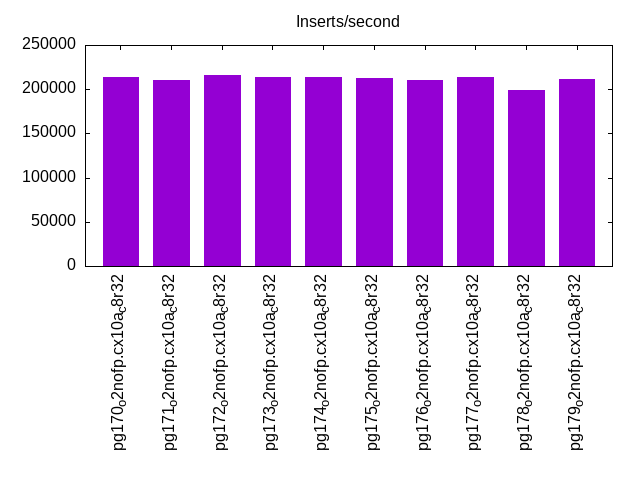
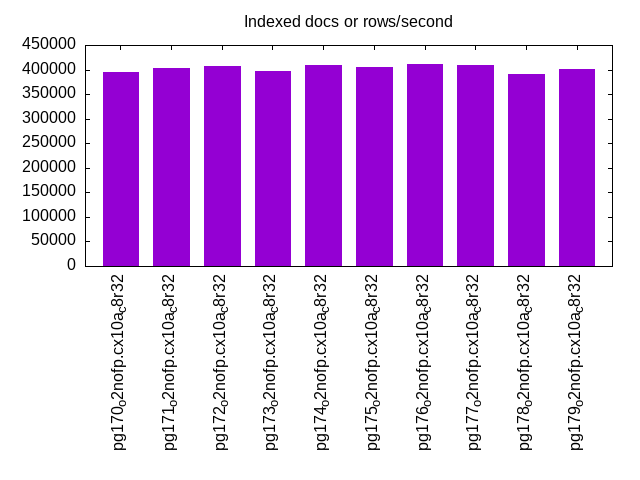
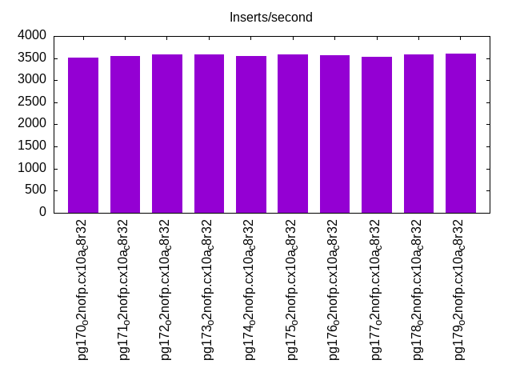
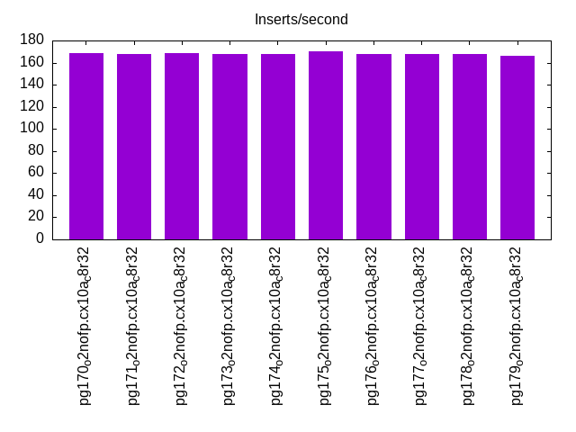
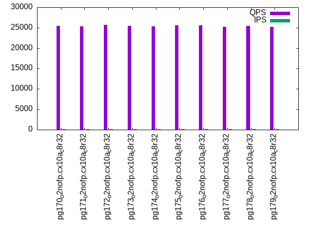
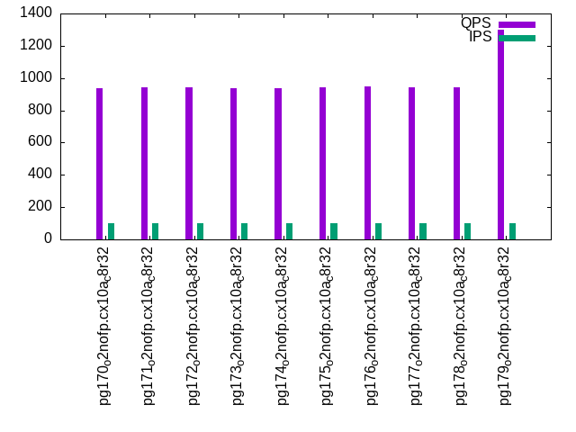
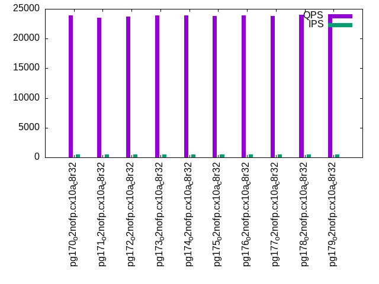
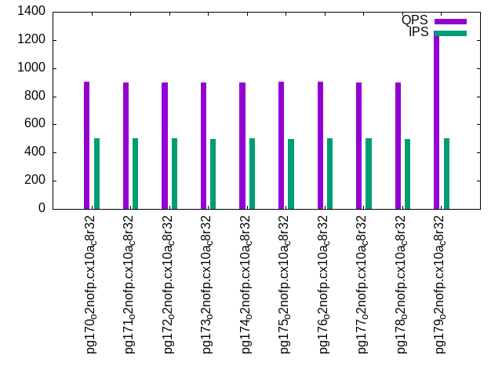
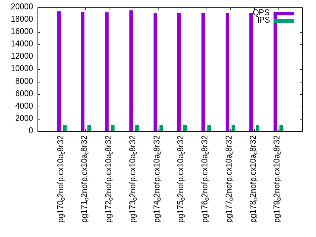
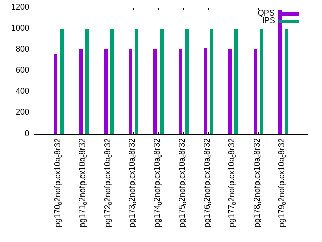

This is a report for the insert benchmark with 800M docs and 1 client(s). It is generated by scripts (bash, awk, sed) and Tufte might not be impressed. An overview of the insert benchmark is here and a short update is here. Below, by DBMS, I mean DBMS+version.config. An example is my8020.c10b40 where my means MySQL, 8020 is version 8.0.20 and c10b40 is the name for the configuration file.
The test server has 8 AMD cores, 32G RAM and an NVMe device for the database. The benchmark was run with 1 client and there were 1 or 3 connections per client (1 for queries or inserts without rate limits, 1+1 for rate limited inserts+deletes). It uses 1 table with a table per client. It loads 800M rows per table without secondary indexes, creates 3 secondary indexes per table, then inserts 4m+1m rows per table with a delete per insert to avoid growing the table. It then does 6 read+write tests for 1800s each that do queries as fast as possible with 100,100,500,500,1000,1000 inserts/s and the same for deletes/s per client concurrent with the queries. The database is IO-bound for most benchmark steps. Clients and the DBMS share one server.
The tested DBMS are:
The numbers are inserts/s for l.i0, l.i1 and l.i2, indexed docs (or rows) /s for l.x and queries/s for qr100, qp100 thru qr1000, qp1000" The values are the average rate over the entire test for inserts (IPS) and queries (QPS). The range of values for IPS and QPS is split into 3 parts: bottom 25%, middle 50%, top 25%. Values in the bottom 25% have a red background, values in the top 25% have a green background and values in the middle have no color. A gray background is used for values that can be ignored because the DBMS did not sustain the target insert rate. Red backgrounds are not used when the minimum value is within 80% of the max value.
| dbms | l.i0 | l.x | l.i1 | l.i2 | qr100 | qp100 | qr500 | qp500 | qr1000 | qp1000 |
|---|---|---|---|---|---|---|---|---|---|---|
| pg170_o2nofp.cx10a_c8r32 | 213447 | 396040 | 3509 | 169 | 25516 | 938 | 23940 | 902 | 19334 | 759 |
| pg171_o2nofp.cx10a_c8r32 | 210084 | 402820 | 3549 | 168 | 25342 | 941 | 23525 | 897 | 19301 | 804 |
| pg172_o2nofp.cx10a_c8r32 | 215517 | 407125 | 3578 | 169 | 25707 | 941 | 23741 | 898 | 19171 | 803 |
| pg173_o2nofp.cx10a_c8r32 | 213618 | 397417 | 3575 | 168 | 25423 | 938 | 23899 | 897 | 19526 | 804 |
| pg174_o2nofp.cx10a_c8r32 | 213618 | 410046 | 3546 | 168 | 25381 | 939 | 23910 | 899 | 19015 | 806 |
| pg175_o2nofp.cx10a_c8r32 | 212314 | 406091 | 3578 | 170 | 25596 | 945 | 23782 | 902 | 19108 | 808 |
| pg176_o2nofp.cx10a_c8r32 | 210970 | 411946 | 3568 | 168 | 25630 | 947 | 23866 | 906 | 19156 | 816 |
| pg177_o2nofp.cx10a_c8r32 | 213846 | 409626 | 3537 | 168 | 25268 | 943 | 23820 | 900 | 19111 | 809 |
| pg178_o2nofp.cx10a_c8r32 | 198610 | 390244 | 3575 | 168 | 25406 | 943 | 23996 | 899 | 19138 | 809 |
| pg179_o2nofp.cx10a_c8r32 | 211977 | 400601 | 3597 | 166 | 25204 | 1301 | 23672 | 1265 | 19186 | 1182 |
This table has relative throughput, throughput for the DBMS relative to the DBMS in the first line, using the absolute throughput from the previous table. Values less than 0.95 have a yellow background. Values greater than 1.05 have a blue background.
| dbms | l.i0 | l.x | l.i1 | l.i2 | qr100 | qp100 | qr500 | qp500 | qr1000 | qp1000 |
|---|---|---|---|---|---|---|---|---|---|---|
| pg170_o2nofp.cx10a_c8r32 | 1.00 | 1.00 | 1.00 | 1.00 | 1.00 | 1.00 | 1.00 | 1.00 | 1.00 | 1.00 |
| pg171_o2nofp.cx10a_c8r32 | 0.98 | 1.02 | 1.01 | 0.99 | 0.99 | 1.00 | 0.98 | 0.99 | 1.00 | 1.06 |
| pg172_o2nofp.cx10a_c8r32 | 1.01 | 1.03 | 1.02 | 1.00 | 1.01 | 1.00 | 0.99 | 1.00 | 0.99 | 1.06 |
| pg173_o2nofp.cx10a_c8r32 | 1.00 | 1.00 | 1.02 | 0.99 | 1.00 | 1.00 | 1.00 | 0.99 | 1.01 | 1.06 |
| pg174_o2nofp.cx10a_c8r32 | 1.00 | 1.04 | 1.01 | 0.99 | 0.99 | 1.00 | 1.00 | 1.00 | 0.98 | 1.06 |
| pg175_o2nofp.cx10a_c8r32 | 0.99 | 1.03 | 1.02 | 1.01 | 1.00 | 1.01 | 0.99 | 1.00 | 0.99 | 1.06 |
| pg176_o2nofp.cx10a_c8r32 | 0.99 | 1.04 | 1.02 | 0.99 | 1.00 | 1.01 | 1.00 | 1.00 | 0.99 | 1.08 |
| pg177_o2nofp.cx10a_c8r32 | 1.00 | 1.03 | 1.01 | 0.99 | 0.99 | 1.01 | 0.99 | 1.00 | 0.99 | 1.07 |
| pg178_o2nofp.cx10a_c8r32 | 0.93 | 0.99 | 1.02 | 0.99 | 1.00 | 1.01 | 1.00 | 1.00 | 0.99 | 1.07 |
| pg179_o2nofp.cx10a_c8r32 | 0.99 | 1.01 | 1.03 | 0.98 | 0.99 | 1.39 | 0.99 | 1.40 | 0.99 | 1.56 |
This lists the average rate of inserts/s for the tests that do inserts concurrent with queries. For such tests the query rate is listed in the table above. The read+write tests are setup so that the insert rate should match the target rate every second. Cells that are not at least 95% of the target have a red background to indicate a failure to satisfy the target.
| dbms | qr100.L1 | qp100.L2 | qr500.L3 | qp500.L4 | qr1000.L5 | qp1000.L6 |
|---|---|---|---|---|---|---|
| pg170_o2nofp.cx10a_c8r32 | 100 | 100 | 500 | 500 | 999 | 999 |
| pg171_o2nofp.cx10a_c8r32 | 100 | 100 | 500 | 500 | 999 | 999 |
| pg172_o2nofp.cx10a_c8r32 | 100 | 100 | 500 | 500 | 999 | 999 |
| pg173_o2nofp.cx10a_c8r32 | 100 | 100 | 499 | 499 | 999 | 999 |
| pg174_o2nofp.cx10a_c8r32 | 100 | 100 | 499 | 500 | 999 | 999 |
| pg175_o2nofp.cx10a_c8r32 | 100 | 100 | 500 | 499 | 999 | 999 |
| pg176_o2nofp.cx10a_c8r32 | 100 | 100 | 499 | 500 | 999 | 999 |
| pg177_o2nofp.cx10a_c8r32 | 100 | 100 | 500 | 500 | 999 | 999 |
| pg178_o2nofp.cx10a_c8r32 | 100 | 100 | 499 | 499 | 999 | 999 |
| pg179_o2nofp.cx10a_c8r32 | 100 | 100 | 499 | 500 | 999 | 999 |
| target | 100 | 100 | 500 | 500 | 1000 | 1000 |
l.i0: load without secondary indexes. Graphs for performance per 1-second interval are here.
Average throughput:

Insert response time histogram: each cell has the percentage of responses that take <= the time in the header and max is the max response time in seconds. For the max column values in the top 25% of the range have a red background and in the bottom 25% of the range have a green background. The red background is not used when the min value is within 80% of the max value.
| dbms | 256us | 1ms | 4ms | 16ms | 64ms | 256ms | 1s | 4s | 16s | gt | max |
|---|---|---|---|---|---|---|---|---|---|---|---|
| pg170_o2nofp.cx10a_c8r32 | 99.962 | 0.031 | 0.007 | 0.001 | 0.045 | ||||||
| pg171_o2nofp.cx10a_c8r32 | 99.970 | 0.026 | 0.003 | 0.001 | 0.040 | ||||||
| pg172_o2nofp.cx10a_c8r32 | 99.969 | 0.027 | 0.004 | 0.001 | 0.033 | ||||||
| pg173_o2nofp.cx10a_c8r32 | 99.967 | 0.029 | 0.004 | nonzero | 0.047 | ||||||
| pg174_o2nofp.cx10a_c8r32 | 99.968 | 0.028 | 0.003 | 0.001 | 0.043 | ||||||
| pg175_o2nofp.cx10a_c8r32 | 99.971 | 0.025 | 0.004 | nonzero | 0.041 | ||||||
| pg176_o2nofp.cx10a_c8r32 | 99.955 | 0.040 | 0.004 | 0.001 | nonzero | 0.070 | |||||
| pg177_o2nofp.cx10a_c8r32 | 99.968 | 0.028 | 0.003 | 0.001 | 0.046 | ||||||
| pg178_o2nofp.cx10a_c8r32 | 99.967 | 0.029 | 0.004 | nonzero | 0.030 | ||||||
| pg179_o2nofp.cx10a_c8r32 | 99.975 | 0.022 | 0.003 | 0.001 | 0.045 |
Performance metrics for the DBMS listed above. Some are normalized by throughput, others are not. Legend for results is here.
ips qps rps rmbps wps wmbps rpq rkbpq wpi wkbpi csps cpups cspq cpupq dbgb1 dbgb2 rss maxop p50 p99 tag 213447 0 37 0.3 795.5 88.0 0.000 0.001 0.004 0.422 21141 20.5 0.099 8 76.5 116.6 19.8 0.045 214976 205174 pg170_o2nofp.cx10a_c8r32 210084 0 35 0.3 784.1 86.4 0.000 0.001 0.004 0.421 20834 20.2 0.099 8 76.5 116.6 1.1 0.040 211465 203965 pg171_o2nofp.cx10a_c8r32 215517 0 38 0.3 802.7 88.7 0.000 0.001 0.004 0.422 21349 20.5 0.099 8 76.5 116.6 18.3 0.033 217064 208771 pg172_o2nofp.cx10a_c8r32 213618 0 36 0.3 803.2 88.4 0.000 0.001 0.004 0.424 21201 20.5 0.099 8 76.5 116.6 18.9 0.047 215060 207165 pg173_o2nofp.cx10a_c8r32 213618 0 37 0.3 796.0 88.0 0.000 0.001 0.004 0.422 21170 20.5 0.099 8 76.5 116.6 19.8 0.043 215163 207071 pg174_o2nofp.cx10a_c8r32 212314 0 37 0.3 796.0 87.8 0.000 0.001 0.004 0.423 21055 20.4 0.099 8 76.5 116.6 19.0 0.041 213673 206271 pg175_o2nofp.cx10a_c8r32 210970 0 38 0.3 787.7 87.0 0.000 0.001 0.004 0.422 21159 20.4 0.100 8 76.5 116.6 19.8 0.070 213668 189279 pg176_o2nofp.cx10a_c8r32 213846 0 37 0.3 795.9 88.0 0.000 0.001 0.004 0.422 21190 20.5 0.099 8 76.5 116.6 0.2 0.046 215271 207478 pg177_o2nofp.cx10a_c8r32 198610 0 36 0.3 739.0 81.5 0.000 0.001 0.004 0.420 19690 19.9 0.099 8 76.5 116.6 19.1 0.030 199778 190375 pg178_o2nofp.cx10a_c8r32 211977 0 40 0.3 790.9 87.2 0.000 0.002 0.004 0.421 21046 20.2 0.099 8 76.5 116.6 18.7 0.045 213369 206172 pg179_o2nofp.cx10a_c8r32
Average values from iostat.
r/s rkB/s rrqm/s %rrqm r_await rareq-s w/s wkB/s wrqm/s %wrqm w_await wareq-s d/s dkB/s drqm/s %drqm d_await dareq-s f/s f_await aqu-sz %util 37.29 299.7 0.005 0.166 0.189 2.826 795.7 90092.3 33.31 3.464 0.488 112.9 0.125 8.611 0.000 0.000 0.334 5.679 44.01 2.442 0.517 15.58 pg170_o2nofp.cx10a_c8r32 34.70 278.6 0.022 0.386 0.116 2.816 784.4 88518.6 32.62 3.200 0.329 112.9 0.187 9.055 0.000 0.000 0.303 6.138 43.32 1.708 0.351 11.96 pg171_o2nofp.cx10a_c8r32 38.05 305.7 0.016 0.216 0.126 2.853 803.0 90910.4 33.21 3.368 0.342 112.9 0.178 9.368 0.000 0.000 0.203 5.519 44.48 1.722 0.364 12.34 pg172_o2nofp.cx10a_c8r32 36.31 291.5 0.007 0.119 0.121 2.784 803.5 90573.8 33.18 3.253 0.335 112.6 0.130 9.927 0.000 0.000 0.214 5.237 44.08 1.711 0.358 12.20 pg173_o2nofp.cx10a_c8r32 37.27 299.8 0.004 0.077 0.135 2.776 796.3 90129.8 33.16 3.349 0.335 112.9 0.170 11.26 0.000 0.000 0.188 7.223 44.06 1.694 0.360 12.19 pg174_o2nofp.cx10a_c8r32 36.66 294.7 0.012 0.184 0.122 2.852 796.3 89920.3 32.24 3.203 0.328 112.8 0.158 7.846 0.000 0.000 0.208 3.943 43.82 1.687 0.350 11.93 pg175_o2nofp.cx10a_c8r32 37.66 303.0 0.110 1.162 0.113 2.974 788.0 89090.5 32.58 3.318 0.326 112.6 0.150 5.218 0.000 0.000 0.176 5.224 43.52 1.684 0.348 12.01 pg176_o2nofp.cx10a_c8r32 37.36 300.5 0.029 0.321 0.105 2.832 796.2 90172.4 33.19 3.341 0.329 112.9 0.133 21.19 0.000 0.000 0.200 23.24 44.09 1.690 0.353 12.19 pg177_o2nofp.cx10a_c8r32 36.45 292.7 0.004 0.073 0.178 2.704 739.2 83495.4 30.02 3.131 0.512 113.0 0.137 16.70 0.000 0.000 0.207 11.86 40.97 1.968 0.497 12.51 pg178_o2nofp.cx10a_c8r32 40.28 323.5 0.059 0.756 0.092 2.872 791.2 89306.2 32.49 3.227 0.300 112.7 0.125 8.609 0.000 0.000 0.166 5.002 43.78 1.513 0.316 11.01 pg179_o2nofp.cx10a_c8r32
l.x: create secondary indexes.
Average throughput:

Performance metrics for the DBMS listed above. Some are normalized by throughput, others are not. Legend for results is here.
ips qps rps rmbps wps wmbps rpq rkbpq wpi wkbpi csps cpups cspq cpupq dbgb1 dbgb2 rss maxop p50 p99 tag 396040 0 1636 159.9 1227.0 148.0 0.004 0.413 0.003 0.383 1567 12.8 0.004 3 153.6 193.7 23.4 0.002 NA NA pg170_o2nofp.cx10a_c8r32 402820 0 1465 153.3 1240.5 150.8 0.004 0.390 0.003 0.383 1320 12.7 0.003 3 153.6 193.7 23.4 0.002 NA NA pg171_o2nofp.cx10a_c8r32 407125 0 1336 148.0 1255.6 152.6 0.003 0.372 0.003 0.384 1160 12.9 0.003 3 153.6 193.7 23.4 0.002 NA NA pg172_o2nofp.cx10a_c8r32 397417 0 1607 158.9 1221.7 148.1 0.004 0.409 0.003 0.382 1516 12.7 0.004 3 153.6 193.7 23.4 0.002 NA NA pg173_o2nofp.cx10a_c8r32 410046 0 1144 139.4 1257.5 153.4 0.003 0.348 0.003 0.383 922 12.9 0.002 3 153.6 193.7 23.4 0.002 NA NA pg174_o2nofp.cx10a_c8r32 406091 0 1307 146.4 1245.1 151.4 0.003 0.369 0.003 0.382 1136 12.8 0.003 3 153.6 193.7 23.4 0.002 NA NA pg175_o2nofp.cx10a_c8r32 411946 0 1123 139.1 1267.0 154.2 0.003 0.346 0.003 0.383 900 12.9 0.002 3 153.6 193.7 23.4 0.002 NA NA pg176_o2nofp.cx10a_c8r32 409626 0 1290 146.4 1260.7 153.2 0.003 0.366 0.003 0.383 1118 12.9 0.003 3 153.6 193.7 23.4 0.002 NA NA pg177_o2nofp.cx10a_c8r32 390244 0 1273 141.4 1205.9 146.2 0.003 0.371 0.003 0.384 1221 12.7 0.003 3 153.6 193.7 23.4 0.002 NA NA pg178_o2nofp.cx10a_c8r32 400601 0 1216 140.8 1229.2 149.8 0.003 0.360 0.003 0.383 1030 12.8 0.003 3 153.6 193.7 23.4 0.002 NA NA pg179_o2nofp.cx10a_c8r32
Average values from iostat.
r/s rkB/s rrqm/s %rrqm r_await rareq-s w/s wkB/s wrqm/s %wrqm w_await wareq-s d/s dkB/s drqm/s %drqm d_await dareq-s f/s f_await aqu-sz %util 1637.6 163801 0.000 0.000 0.095 96.97 1229.3 151808 23.32 1.069 0.254 124.1 1.068 26482.8 0.000 0.000 0.330 622.3 9.480 2.111 0.656 18.21 pg170_o2nofp.cx10a_c8r32 1465.7 156965 0.005 0.000 0.103 100.8 1243.3 154723 24.68 1.075 0.211 125.2 1.109 30787.9 0.000 0.000 0.316 725.5 9.898 2.218 0.543 18.22 pg171_o2nofp.cx10a_c8r32 1336.2 151573 0.002 0.000 0.112 103.6 1258.5 156614 25.86 1.094 0.218 125.2 1.132 22648.0 0.000 0.000 0.309 439.6 10.23 2.223 0.556 17.97 pg172_o2nofp.cx10a_c8r32 1607.8 162784 0.004 0.000 0.096 98.17 1224.5 151970 23.96 1.045 0.206 125.0 1.003 22016.6 0.000 0.000 0.297 534.6 9.618 2.174 0.534 18.42 pg173_o2nofp.cx10a_c8r32 1143.7 142756 0.000 0.000 0.106 107.7 1260.8 157517 26.65 1.077 0.211 125.8 1.119 31955.1 0.000 0.000 0.309 954.6 10.47 2.124 0.546 17.27 pg174_o2nofp.cx10a_c8r32 1307.1 149880 0.008 0.001 0.103 104.8 1247.5 155348 25.41 1.075 0.203 125.2 1.135 33006.2 0.000 0.000 0.304 611.0 10.13 2.091 0.525 17.61 pg175_o2nofp.cx10a_c8r32 1122.9 142458 0.009 0.001 0.104 108.8 1270.0 158265 27.07 1.099 0.213 125.4 1.067 23013.6 0.000 0.000 0.309 453.4 10.50 2.169 0.549 17.00 pg176_o2nofp.cx10a_c8r32 1290.8 149883 0.003 0.000 0.131 104.7 1263.1 157165 26.44 1.082 0.208 125.3 1.042 22852.2 0.000 0.000 0.316 446.6 10.35 2.045 0.541 17.66 pg177_o2nofp.cx10a_c8r32 1273.2 144840 0.000 0.000 0.112 104.4 1207.9 149995 25.13 1.105 0.240 124.8 1.118 35554.6 0.000 0.000 0.313 631.7 9.862 2.184 0.574 18.70 pg178_o2nofp.cx10a_c8r32 1215.7 144218 0.000 0.000 0.120 105.4 1231.4 153724 25.56 1.065 0.200 125.6 0.802 25810.2 0.000 0.000 0.285 5666.3 10.07 1.963 0.516 16.80 pg179_o2nofp.cx10a_c8r32
l.i1: continue load after secondary indexes created with 50 inserts per transaction. Graphs for performance per 1-second interval are here.
Average throughput:

Insert response time histogram: each cell has the percentage of responses that take <= the time in the header and max is the max response time in seconds. For the max column values in the top 25% of the range have a red background and in the bottom 25% of the range have a green background. The red background is not used when the min value is within 80% of the max value.
| dbms | 256us | 1ms | 4ms | 16ms | 64ms | 256ms | 1s | 4s | 16s | gt | max |
|---|---|---|---|---|---|---|---|---|---|---|---|
| pg170_o2nofp.cx10a_c8r32 | 0.025 | 99.815 | 0.160 | 0.058 | |||||||
| pg171_o2nofp.cx10a_c8r32 | 0.031 | 99.933 | 0.036 | 0.029 | |||||||
| pg172_o2nofp.cx10a_c8r32 | 0.028 | 99.899 | 0.074 | 0.032 | |||||||
| pg173_o2nofp.cx10a_c8r32 | 0.029 | 99.910 | 0.061 | 0.053 | |||||||
| pg174_o2nofp.cx10a_c8r32 | 0.015 | 99.922 | 0.062 | 0.056 | |||||||
| pg175_o2nofp.cx10a_c8r32 | 0.015 | 99.913 | 0.072 | 0.049 | |||||||
| pg176_o2nofp.cx10a_c8r32 | 0.019 | 99.916 | 0.065 | 0.048 | |||||||
| pg177_o2nofp.cx10a_c8r32 | 0.021 | 99.931 | 0.048 | 0.032 | |||||||
| pg178_o2nofp.cx10a_c8r32 | 0.024 | 99.925 | 0.051 | 0.038 | |||||||
| pg179_o2nofp.cx10a_c8r32 | 0.014 | 99.956 | 0.030 | 0.042 |
Delete response time histogram: each cell has the percentage of responses that take <= the time in the header and max is the max response time in seconds. For the max column values in the top 25% of the range have a red background and in the bottom 25% of the range have a green background. The red background is not used when the min value is within 80% of the max value.
| dbms | 256us | 1ms | 4ms | 16ms | 64ms | 256ms | 1s | 4s | 16s | gt | max |
|---|---|---|---|---|---|---|---|---|---|---|---|
| pg170_o2nofp.cx10a_c8r32 | 1.960 | 17.140 | 39.831 | 41.069 | 0.046 | ||||||
| pg171_o2nofp.cx10a_c8r32 | 1.011 | 17.316 | 41.692 | 39.980 | 0.032 | ||||||
| pg172_o2nofp.cx10a_c8r32 | 0.003 | 1.179 | 17.811 | 40.867 | 40.140 | 0.034 | |||||
| pg173_o2nofp.cx10a_c8r32 | 1.245 | 17.081 | 40.770 | 40.904 | 0.032 | ||||||
| pg174_o2nofp.cx10a_c8r32 | 1.655 | 16.134 | 42.044 | 40.168 | 0.034 | ||||||
| pg175_o2nofp.cx10a_c8r32 | 1.508 | 16.871 | 41.339 | 40.282 | 0.032 | ||||||
| pg176_o2nofp.cx10a_c8r32 | 0.005 | 1.505 | 17.646 | 41.060 | 39.784 | 0.038 | |||||
| pg177_o2nofp.cx10a_c8r32 | 0.921 | 17.348 | 41.558 | 40.174 | 0.033 | ||||||
| pg178_o2nofp.cx10a_c8r32 | 1.394 | 16.878 | 42.034 | 39.695 | 0.032 | ||||||
| pg179_o2nofp.cx10a_c8r32 | 1.731 | 17.095 | 41.546 | 39.627 | 0.034 |
Performance metrics for the DBMS listed above. Some are normalized by throughput, others are not. Legend for results is here.
ips qps rps rmbps wps wmbps rpq rkbpq wpi wkbpi csps cpups cspq cpupq dbgb1 dbgb2 rss maxop p50 p99 tag 3509 0 5059 41.7 4343.1 78.1 1.442 12.157 1.238 22.785 11394 15.6 3.247 356 154.3 194.3 22.7 0.058 2699 1749 pg170_o2nofp.cx10a_c8r32 3549 0 5121 40.3 4225.7 72.5 1.443 11.640 1.191 20.921 11461 15.3 3.229 345 154.3 194.3 22.6 0.029 2700 1850 pg171_o2nofp.cx10a_c8r32 3578 0 5134 40.5 4222.4 72.5 1.435 11.578 1.180 20.745 11544 15.3 3.226 342 154.3 194.3 22.6 0.032 2749 1900 pg172_o2nofp.cx10a_c8r32 3575 0 5133 40.4 4221.3 72.3 1.436 11.585 1.181 20.725 11540 15.4 3.228 345 154.3 194.3 22.9 0.053 2750 1900 pg173_o2nofp.cx10a_c8r32 3546 0 5092 40.1 4207.5 72.5 1.436 11.587 1.187 20.930 11455 15.3 3.230 345 154.3 194.3 22.9 0.056 2650 1850 pg174_o2nofp.cx10a_c8r32 3578 0 5137 40.5 4229.3 72.5 1.436 11.586 1.182 20.742 11545 15.3 3.227 342 154.3 194.3 21.7 0.049 2749 1900 pg175_o2nofp.cx10a_c8r32 3568 0 5132 40.5 4783.4 82.4 1.438 11.610 1.341 23.639 11584 15.7 3.246 352 154.3 194.3 22.9 0.048 2750 1850 pg176_o2nofp.cx10a_c8r32 3537 0 5070 39.9 4179.0 72.1 1.433 11.566 1.182 20.874 11408 15.3 3.226 346 154.3 194.3 22.9 0.032 2699 1899 pg177_o2nofp.cx10a_c8r32 3575 0 5134 40.5 4250.0 73.3 1.436 11.589 1.189 21.004 11544 15.4 3.230 345 154.3 194.3 23.0 0.038 2700 1900 pg178_o2nofp.cx10a_c8r32 3597 0 5163 40.7 4234.3 72.9 1.435 11.581 1.177 20.765 11599 15.4 3.224 343 154.3 194.3 22.7 0.042 2748 1899 pg179_o2nofp.cx10a_c8r32
Average values from iostat.
r/s rkB/s rrqm/s %rrqm r_await rareq-s w/s wkB/s wrqm/s %wrqm w_await wareq-s d/s dkB/s drqm/s %drqm d_await dareq-s f/s f_await aqu-sz %util 5017.2 42326.6 0.000 0.000 0.045 8.607 4359.4 79970.3 21.10 1.024 0.157 36.85 0.009 29.21 0.000 0.000 0.017 36.66 40.59 1.726 0.848 32.25 pg170_o2nofp.cx10a_c8r32 5081.6 40999.9 0.000 0.000 0.043 8.072 4241.8 74273.5 19.79 0.768 0.144 37.52 0.021 0.161 0.000 0.000 0.080 0.518 37.36 1.722 0.870 31.30 pg171_o2nofp.cx10a_c8r32 5095.0 41109.6 0.000 0.000 0.043 8.073 4238.7 74243.0 16.67 0.959 0.148 38.83 0.006 0.112 0.000 0.000 0.014 0.324 37.75 1.726 0.815 31.67 pg172_o2nofp.cx10a_c8r32 5093.2 41093.7 0.000 0.000 0.043 8.072 4237.5 74102.7 18.06 1.077 0.149 38.86 0.030 0.184 0.000 0.000 0.108 0.631 37.82 1.717 0.812 31.59 pg173_o2nofp.cx10a_c8r32 5053.1 40774.7 0.000 0.000 0.043 8.074 4223.5 74235.7 19.27 0.718 0.143 36.77 0.024 0.182 0.000 0.000 0.096 0.625 37.54 1.700 0.884 31.49 pg174_o2nofp.cx10a_c8r32 5095.2 41112.6 0.000 0.000 0.043 8.073 4245.5 74210.5 13.85 0.737 0.147 38.53 0.009 0.130 0.000 0.000 0.036 0.468 37.66 1.689 0.828 31.47 pg175_o2nofp.cx10a_c8r32 5091.0 41093.9 0.000 0.000 0.043 8.076 4802.0 84400.2 26.58 0.783 0.134 32.15 0.013 0.258 0.000 0.000 0.031 1.040 40.73 1.702 0.901 32.78 pg176_o2nofp.cx10a_c8r32 5030.4 40588.1 0.000 0.000 0.043 8.072 4194.8 73837.9 19.41 0.739 0.139 37.02 0.024 0.352 0.000 0.000 0.112 1.339 37.30 1.682 0.856 31.15 pg177_o2nofp.cx10a_c8r32 5095.4 41115.1 0.000 0.000 0.043 8.073 4266.3 75108.7 19.76 0.729 0.148 36.38 0.018 0.166 0.000 0.000 0.072 0.486 37.94 1.797 0.940 32.05 pg178_o2nofp.cx10a_c8r32 5122.8 41335.5 0.000 0.000 0.042 8.073 4250.5 74705.4 14.31 0.594 0.127 38.06 0.033 0.206 0.000 0.000 0.152 0.796 37.77 1.566 0.786 31.02 pg179_o2nofp.cx10a_c8r32
l.i2: continue load after secondary indexes created with 5 inserts per transaction. Graphs for performance per 1-second interval are here.
Average throughput:

Insert response time histogram: each cell has the percentage of responses that take <= the time in the header and max is the max response time in seconds. For the max column values in the top 25% of the range have a red background and in the bottom 25% of the range have a green background. The red background is not used when the min value is within 80% of the max value.
| dbms | 256us | 1ms | 4ms | 16ms | 64ms | 256ms | 1s | 4s | 16s | gt | max |
|---|---|---|---|---|---|---|---|---|---|---|---|
| pg170_o2nofp.cx10a_c8r32 | 44.909 | 54.987 | 0.103 | 0.013 | |||||||
| pg171_o2nofp.cx10a_c8r32 | 42.955 | 56.931 | 0.114 | 0.012 | |||||||
| pg172_o2nofp.cx10a_c8r32 | 44.828 | 55.078 | 0.094 | 0.011 | |||||||
| pg173_o2nofp.cx10a_c8r32 | 44.751 | 55.178 | 0.071 | 0.013 | |||||||
| pg174_o2nofp.cx10a_c8r32 | 44.905 | 55.004 | 0.091 | 0.014 | |||||||
| pg175_o2nofp.cx10a_c8r32 | 47.042 | 52.814 | 0.145 | 0.014 | |||||||
| pg176_o2nofp.cx10a_c8r32 | 40.948 | 58.965 | 0.086 | 0.012 | |||||||
| pg177_o2nofp.cx10a_c8r32 | 46.729 | 53.156 | 0.114 | 0.012 | |||||||
| pg178_o2nofp.cx10a_c8r32 | 42.639 | 57.236 | 0.124 | 0.001 | 0.017 | ||||||
| pg179_o2nofp.cx10a_c8r32 | 44.556 | 55.355 | 0.088 | 0.016 |
Delete response time histogram: each cell has the percentage of responses that take <= the time in the header and max is the max response time in seconds. For the max column values in the top 25% of the range have a red background and in the bottom 25% of the range have a green background. The red background is not used when the min value is within 80% of the max value.
| dbms | 256us | 1ms | 4ms | 16ms | 64ms | 256ms | 1s | 4s | 16s | gt | max |
|---|---|---|---|---|---|---|---|---|---|---|---|
| pg170_o2nofp.cx10a_c8r32 | 99.999 | 0.001 | 0.080 | ||||||||
| pg171_o2nofp.cx10a_c8r32 | 99.999 | 0.001 | 0.078 | ||||||||
| pg172_o2nofp.cx10a_c8r32 | 99.999 | 0.001 | 0.079 | ||||||||
| pg173_o2nofp.cx10a_c8r32 | 99.999 | 0.001 | 0.082 | ||||||||
| pg174_o2nofp.cx10a_c8r32 | 99.999 | 0.001 | 0.081 | ||||||||
| pg175_o2nofp.cx10a_c8r32 | 99.999 | 0.001 | 0.080 | ||||||||
| pg176_o2nofp.cx10a_c8r32 | 99.999 | 0.001 | 0.082 | ||||||||
| pg177_o2nofp.cx10a_c8r32 | 99.999 | 0.001 | 0.081 | ||||||||
| pg178_o2nofp.cx10a_c8r32 | 99.999 | 0.001 | 0.080 | ||||||||
| pg179_o2nofp.cx10a_c8r32 | 99.999 | 0.001 | 0.078 |
Performance metrics for the DBMS listed above. Some are normalized by throughput, others are not. Legend for results is here.
ips qps rps rmbps wps wmbps rpq rkbpq wpi wkbpi csps cpups cspq cpupq dbgb1 dbgb2 rss maxop p50 p99 tag 169 0 184 1.5 492.6 6.9 1.093 8.854 2.918 41.937 1097 12.8 6.501 6066 154.4 192.0 23.4 0.013 165 150 pg170_o2nofp.cx10a_c8r32 168 0 181 1.4 502.1 6.8 1.077 8.722 2.987 41.497 1092 12.8 6.496 6092 154.4 194.5 23.3 0.012 165 145 pg171_o2nofp.cx10a_c8r32 169 0 181 1.4 503.0 6.9 1.071 8.673 2.977 41.780 1092 12.7 6.462 6012 154.4 194.5 23.3 0.011 165 150 pg172_o2nofp.cx10a_c8r32 168 0 179 1.4 495.7 6.8 1.070 8.669 2.959 41.688 1081 12.8 6.452 6113 154.4 194.5 22.9 0.013 165 150 pg173_o2nofp.cx10a_c8r32 168 0 185 1.9 516.5 7.9 1.102 11.621 3.084 48.428 1092 12.8 6.521 6113 154.4 194.5 23.0 0.014 165 145 pg174_o2nofp.cx10a_c8r32 170 0 182 1.4 501.8 6.9 1.070 8.668 2.952 41.564 1096 12.7 6.450 5976 154.4 194.5 22.8 0.014 170 150 pg175_o2nofp.cx10a_c8r32 168 0 186 1.5 470.2 6.4 1.108 8.976 2.802 39.275 1101 12.7 6.559 6055 154.4 192.6 23.3 0.012 165 150 pg176_o2nofp.cx10a_c8r32 168 0 179 1.4 498.7 6.8 1.069 8.661 2.974 41.725 1085 12.8 6.472 6106 154.4 194.5 22.9 0.012 165 145 pg177_o2nofp.cx10a_c8r32 168 0 180 1.4 501.4 6.8 1.068 8.652 2.978 41.598 1090 12.8 6.472 6081 154.4 194.5 23.0 0.017 170 145 pg178_o2nofp.cx10a_c8r32 166 0 178 1.4 499.3 6.8 1.069 8.661 2.999 41.815 1078 12.7 6.477 6102 154.4 194.5 22.8 0.016 165 150 pg179_o2nofp.cx10a_c8r32
Average values from iostat.
r/s rkB/s rrqm/s %rrqm r_await rareq-s w/s wkB/s wrqm/s %wrqm w_await wareq-s d/s dkB/s drqm/s %drqm d_await dareq-s f/s f_await aqu-sz %util 184.5 1494.3 0.000 0.000 0.055 8.101 492.7 7077.7 4.026 1.413 0.089 19.08 0.028 434.9 0.000 0.000 0.006 25.30 5.839 1.719 0.049 2.679 pg170_o2nofp.cx10a_c8r32 181.0 1466.0 0.000 0.000 0.056 8.099 502.2 6977.7 6.297 1.777 0.083 17.36 0.008 0.119 0.000 0.000 0.033 0.370 6.209 1.716 0.052 2.883 pg171_o2nofp.cx10a_c8r32 180.9 1465.5 0.000 0.000 0.056 8.100 503.4 7065.1 6.128 1.772 0.083 17.66 0.002 0.136 0.000 0.000 0.003 0.345 6.228 1.706 0.051 2.819 pg172_o2nofp.cx10a_c8r32 179.2 1451.9 0.000 0.000 0.055 8.101 495.8 6985.2 5.327 1.858 0.083 18.18 0.001 0.108 0.000 0.000 0.003 0.275 5.728 1.699 0.048 2.633 pg173_o2nofp.cx10a_c8r32 184.6 1946.8 0.000 0.000 0.056 8.366 516.9 8117.0 6.140 1.823 0.086 20.45 0.001 0.095 0.000 0.000 0.003 0.332 6.361 1.702 0.057 2.946 pg174_o2nofp.cx10a_c8r32 181.9 1473.2 0.000 0.000 0.056 8.101 502.2 7069.5 4.239 1.126 0.088 18.34 0.002 0.136 0.000 0.000 0.004 0.281 6.245 1.684 0.053 2.849 pg175_o2nofp.cx10a_c8r32 185.9 1505.9 0.000 0.000 0.055 8.100 470.2 6589.1 4.769 1.666 0.091 20.30 0.023 338.8 0.000 0.000 0.003 12.95 5.822 1.684 0.046 2.697 pg176_o2nofp.cx10a_c8r32 179.3 1452.2 0.000 0.000 0.056 8.100 499.0 7000.6 6.042 1.699 0.080 17.72 0.001 0.093 0.000 0.000 0.005 0.316 6.201 1.675 0.050 2.820 pg177_o2nofp.cx10a_c8r32 179.9 1456.8 0.000 0.000 0.057 8.099 501.8 7009.0 6.112 1.752 0.083 17.49 0.002 0.100 0.000 0.000 0.004 0.256 6.193 1.780 0.052 2.883 pg178_o2nofp.cx10a_c8r32 178.0 1441.9 0.000 0.000 0.056 8.101 499.4 6964.1 4.325 1.120 0.078 17.39 0.006 0.107 0.000 0.000 0.021 0.400 6.202 1.583 0.049 2.812 pg179_o2nofp.cx10a_c8r32
qr100.L1: range queries with 100 insert/s per client. Graphs for performance per 1-second interval are here.
Average throughput:

Query response time histogram: each cell has the percentage of responses that take <= the time in the header and max is the max response time in seconds. For max values in the top 25% of the range have a red background and in the bottom 25% of the range have a green background. The red background is not used when the min value is within 80% of the max value.
| dbms | 256us | 1ms | 4ms | 16ms | 64ms | 256ms | 1s | 4s | 16s | gt | max |
|---|---|---|---|---|---|---|---|---|---|---|---|
| pg170_o2nofp.cx10a_c8r32 | 99.991 | 0.009 | nonzero | nonzero | 0.010 | ||||||
| pg171_o2nofp.cx10a_c8r32 | 99.991 | 0.008 | nonzero | nonzero | 0.010 | ||||||
| pg172_o2nofp.cx10a_c8r32 | 99.992 | 0.008 | nonzero | nonzero | 0.006 | ||||||
| pg173_o2nofp.cx10a_c8r32 | 99.991 | 0.009 | nonzero | nonzero | 0.010 | ||||||
| pg174_o2nofp.cx10a_c8r32 | 99.987 | 0.011 | 0.001 | nonzero | 0.010 | ||||||
| pg175_o2nofp.cx10a_c8r32 | 99.993 | 0.007 | nonzero | nonzero | 0.010 | ||||||
| pg176_o2nofp.cx10a_c8r32 | 99.992 | 0.008 | nonzero | nonzero | 0.010 | ||||||
| pg177_o2nofp.cx10a_c8r32 | 99.987 | 0.012 | 0.001 | nonzero | 0.010 | ||||||
| pg178_o2nofp.cx10a_c8r32 | 99.991 | 0.009 | nonzero | nonzero | 0.010 | ||||||
| pg179_o2nofp.cx10a_c8r32 | 99.992 | 0.008 | nonzero | nonzero | 0.009 |
Insert response time histogram: each cell has the percentage of responses that take <= the time in the header and max is the max response time in seconds. For max values in the top 25% of the range have a red background and in the bottom 25% of the range have a green background. The red background is not used when the min value is within 80% of the max value.
| dbms | 256us | 1ms | 4ms | 16ms | 64ms | 256ms | 1s | 4s | 16s | gt | max |
|---|---|---|---|---|---|---|---|---|---|---|---|
| pg170_o2nofp.cx10a_c8r32 | 99.861 | 0.139 | 0.022 | ||||||||
| pg171_o2nofp.cx10a_c8r32 | 99.972 | 0.028 | 0.023 | ||||||||
| pg172_o2nofp.cx10a_c8r32 | 99.972 | 0.028 | 0.024 | ||||||||
| pg173_o2nofp.cx10a_c8r32 | 99.944 | 0.056 | 0.023 | ||||||||
| pg174_o2nofp.cx10a_c8r32 | 99.472 | 0.528 | 0.030 | ||||||||
| pg175_o2nofp.cx10a_c8r32 | 0.028 | 99.917 | 0.056 | 0.023 | |||||||
| pg176_o2nofp.cx10a_c8r32 | 99.972 | 0.028 | 0.024 | ||||||||
| pg177_o2nofp.cx10a_c8r32 | 99.444 | 0.556 | 0.032 | ||||||||
| pg178_o2nofp.cx10a_c8r32 | 99.972 | 0.028 | 0.024 | ||||||||
| pg179_o2nofp.cx10a_c8r32 | 11.500 | 88.472 | 0.028 | 0.020 |
Delete response time histogram: each cell has the percentage of responses that take <= the time in the header and max is the max response time in seconds. For max values in the top 25% of the range have a red background and in the bottom 25% of the range have a green background. The red background is not used when the min value is within 80% of the max value.
| dbms | 256us | 1ms | 4ms | 16ms | 64ms | 256ms | 1s | 4s | 16s | gt | max |
|---|---|---|---|---|---|---|---|---|---|---|---|
| pg170_o2nofp.cx10a_c8r32 | 57.861 | 42.139 | 0.003 | ||||||||
| pg171_o2nofp.cx10a_c8r32 | 0.028 | 59.583 | 40.389 | 0.003 | |||||||
| pg172_o2nofp.cx10a_c8r32 | 58.222 | 41.778 | 0.003 | ||||||||
| pg173_o2nofp.cx10a_c8r32 | 59.472 | 40.528 | 0.004 | ||||||||
| pg174_o2nofp.cx10a_c8r32 | 59.694 | 40.306 | 0.003 | ||||||||
| pg175_o2nofp.cx10a_c8r32 | 59.528 | 40.472 | 0.003 | ||||||||
| pg176_o2nofp.cx10a_c8r32 | 0.028 | 59.583 | 40.389 | 0.003 | |||||||
| pg177_o2nofp.cx10a_c8r32 | 57.000 | 43.000 | 0.002 | ||||||||
| pg178_o2nofp.cx10a_c8r32 | 0.056 | 60.667 | 39.278 | 0.002 | |||||||
| pg179_o2nofp.cx10a_c8r32 | 0.028 | 59.306 | 40.667 | 0.003 |
Performance metrics for the DBMS listed above. Some are normalized by throughput, others are not. Legend for results is here.
ips qps rps rmbps wps wmbps rpq rkbpq wpi wkbpi csps cpups cspq cpupq dbgb1 dbgb2 rss maxop p50 p99 tag 100 25516 112 0.9 66.7 1.9 0.004 0.036 0.668 19.453 97637 8.9 3.826 28 154.4 189.7 23.4 0.010 25387 24952 pg170_o2nofp.cx10a_c8r32 100 25342 113 0.9 66.9 1.9 0.004 0.037 0.670 19.484 96975 8.7 3.827 27 154.4 192.3 23.4 0.010 25325 25061 pg171_o2nofp.cx10a_c8r32 100 25707 112 0.9 66.6 1.9 0.004 0.036 0.667 19.434 98312 8.6 3.824 27 154.4 193.2 23.4 0.006 25740 25403 pg172_o2nofp.cx10a_c8r32 100 25423 112 0.9 66.8 1.9 0.004 0.037 0.669 19.468 97283 8.6 3.827 27 154.4 192.0 23.4 0.010 25467 25132 pg173_o2nofp.cx10a_c8r32 100 25381 113 0.9 67.0 1.9 0.004 0.036 0.671 19.496 97124 8.6 3.827 27 154.4 192.9 23.4 0.010 25468 24797 pg174_o2nofp.cx10a_c8r32 100 25596 113 0.9 67.2 1.9 0.004 0.036 0.673 19.471 97890 8.7 3.824 27 154.4 192.0 23.4 0.010 25501 25220 pg175_o2nofp.cx10a_c8r32 100 25630 112 0.9 67.1 1.9 0.004 0.037 0.673 19.502 98074 8.7 3.827 27 154.4 189.8 23.3 0.010 25643 25195 pg176_o2nofp.cx10a_c8r32 100 25268 113 0.9 66.7 1.9 0.004 0.037 0.669 19.469 96690 8.7 3.827 28 154.4 193.7 23.3 0.010 25227 24829 pg177_o2nofp.cx10a_c8r32 100 25406 112 0.9 66.6 1.9 0.004 0.037 0.666 19.429 97166 8.6 3.824 27 154.5 192.1 23.4 0.010 25403 25032 pg178_o2nofp.cx10a_c8r32 100 25204 113 0.9 67.5 1.9 0.004 0.037 0.677 19.522 96444 8.6 3.827 27 154.4 192.8 23.4 0.009 25132 24829 pg179_o2nofp.cx10a_c8r32
Average values from iostat.
r/s rkB/s rrqm/s %rrqm r_await rareq-s w/s wkB/s wrqm/s %wrqm w_await wareq-s d/s dkB/s drqm/s %drqm d_await dareq-s f/s f_await aqu-sz %util 109.1 889.8 0.000 0.000 0.080 8.153 66.81 1942.2 1.672 5.335 0.890 60.39 0.001 0.002 0.000 0.000 0.000 0.011 2.675 1.980 0.085 1.979 pg170_o2nofp.cx10a_c8r32 109.3 898.8 0.000 0.000 0.080 8.220 67.02 1945.4 2.066 6.280 0.908 60.54 0.001 0.002 0.000 0.000 0.000 0.011 2.631 2.147 0.086 1.995 pg171_o2nofp.cx10a_c8r32 108.9 888.0 0.000 0.000 0.080 8.157 66.77 1942.2 1.969 5.970 0.883 60.71 0.001 0.002 0.000 0.000 0.003 0.011 2.698 2.037 0.084 1.978 pg172_o2nofp.cx10a_c8r32 108.9 888.9 0.000 0.000 0.080 8.160 66.92 1943.6 2.047 6.249 0.900 60.80 0.001 0.002 0.000 0.000 0.006 0.011 2.611 2.227 0.085 1.996 pg173_o2nofp.cx10a_c8r32 109.6 887.0 0.000 0.000 0.080 8.091 67.11 1946.5 1.953 5.925 0.864 60.47 0.001 0.002 0.000 0.000 0.000 0.011 2.781 1.999 0.080 2.009 pg174_o2nofp.cx10a_c8r32 109.2 893.8 0.000 0.000 0.081 8.184 67.32 1945.9 1.502 4.983 0.904 60.18 0.001 0.002 0.000 0.000 0.000 0.011 2.646 2.053 0.086 1.963 pg175_o2nofp.cx10a_c8r32 109.1 906.5 0.000 0.000 0.080 8.309 67.27 1947.1 1.963 5.937 0.891 60.72 0.001 0.002 0.000 0.000 0.000 0.011 2.606 1.982 0.085 1.947 pg176_o2nofp.cx10a_c8r32 109.5 895.5 0.000 0.000 0.081 8.180 66.86 1943.8 1.986 6.081 0.933 60.57 0.001 0.002 0.000 0.000 0.000 0.011 2.638 2.178 0.085 2.027 pg177_o2nofp.cx10a_c8r32 109.0 903.5 0.000 0.000 0.080 8.284 66.70 1941.7 2.007 6.165 0.890 61.07 0.001 0.002 0.000 0.000 0.003 0.011 2.620 2.126 0.085 1.976 pg178_o2nofp.cx10a_c8r32 109.5 897.5 0.000 0.000 0.057 8.192 67.67 1949.2 1.521 4.898 0.853 60.06 0.001 0.002 0.000 0.000 0.003 0.011 2.617 1.738 0.083 1.695 pg179_o2nofp.cx10a_c8r32
qp100.L2: point queries with 100 insert/s per client. Graphs for performance per 1-second interval are here.
Average throughput:

Query response time histogram: each cell has the percentage of responses that take <= the time in the header and max is the max response time in seconds. For max values in the top 25% of the range have a red background and in the bottom 25% of the range have a green background. The red background is not used when the min value is within 80% of the max value.
| dbms | 256us | 1ms | 4ms | 16ms | 64ms | 256ms | 1s | 4s | 16s | gt | max |
|---|---|---|---|---|---|---|---|---|---|---|---|
| pg170_o2nofp.cx10a_c8r32 | nonzero | 43.833 | 56.104 | 0.060 | 0.003 | 0.018 | |||||
| pg171_o2nofp.cx10a_c8r32 | nonzero | 43.123 | 56.841 | 0.035 | 0.014 | ||||||
| pg172_o2nofp.cx10a_c8r32 | 0.001 | 43.144 | 56.816 | 0.040 | nonzero | 0.020 | |||||
| pg173_o2nofp.cx10a_c8r32 | nonzero | 42.503 | 57.457 | 0.040 | 0.013 | ||||||
| pg174_o2nofp.cx10a_c8r32 | nonzero | 42.712 | 57.251 | 0.036 | 0.015 | ||||||
| pg175_o2nofp.cx10a_c8r32 | nonzero | 44.346 | 55.618 | 0.036 | nonzero | 0.019 | |||||
| pg176_o2nofp.cx10a_c8r32 | nonzero | 44.994 | 54.973 | 0.033 | nonzero | 0.017 | |||||
| pg177_o2nofp.cx10a_c8r32 | nonzero | 43.886 | 56.074 | 0.040 | nonzero | 0.018 | |||||
| pg178_o2nofp.cx10a_c8r32 | nonzero | 44.029 | 55.927 | 0.044 | 0.014 | ||||||
| pg179_o2nofp.cx10a_c8r32 | 0.002 | 94.949 | 5.039 | 0.010 | 0.012 |
Insert response time histogram: each cell has the percentage of responses that take <= the time in the header and max is the max response time in seconds. For max values in the top 25% of the range have a red background and in the bottom 25% of the range have a green background. The red background is not used when the min value is within 80% of the max value.
| dbms | 256us | 1ms | 4ms | 16ms | 64ms | 256ms | 1s | 4s | 16s | gt | max |
|---|---|---|---|---|---|---|---|---|---|---|---|
| pg170_o2nofp.cx10a_c8r32 | 99.833 | 0.167 | 0.019 | ||||||||
| pg171_o2nofp.cx10a_c8r32 | 100.000 | 0.015 | |||||||||
| pg172_o2nofp.cx10a_c8r32 | 99.944 | 0.056 | 0.017 | ||||||||
| pg173_o2nofp.cx10a_c8r32 | 99.944 | 0.056 | 0.022 | ||||||||
| pg174_o2nofp.cx10a_c8r32 | 100.000 | 0.014 | |||||||||
| pg175_o2nofp.cx10a_c8r32 | 99.917 | 0.083 | 0.021 | ||||||||
| pg176_o2nofp.cx10a_c8r32 | 100.000 | 0.015 | |||||||||
| pg177_o2nofp.cx10a_c8r32 | 99.944 | 0.056 | 0.020 | ||||||||
| pg178_o2nofp.cx10a_c8r32 | 99.917 | 0.083 | 0.021 | ||||||||
| pg179_o2nofp.cx10a_c8r32 | 100.000 | 0.012 |
Delete response time histogram: each cell has the percentage of responses that take <= the time in the header and max is the max response time in seconds. For max values in the top 25% of the range have a red background and in the bottom 25% of the range have a green background. The red background is not used when the min value is within 80% of the max value.
| dbms | 256us | 1ms | 4ms | 16ms | 64ms | 256ms | 1s | 4s | 16s | gt | max |
|---|---|---|---|---|---|---|---|---|---|---|---|
| pg170_o2nofp.cx10a_c8r32 | 4.250 | 95.556 | 0.194 | 0.010 | |||||||
| pg171_o2nofp.cx10a_c8r32 | 4.806 | 95.167 | 0.028 | 0.007 | |||||||
| pg172_o2nofp.cx10a_c8r32 | 6.083 | 93.889 | 0.028 | 0.007 | |||||||
| pg173_o2nofp.cx10a_c8r32 | 5.389 | 94.583 | 0.028 | 0.007 | |||||||
| pg174_o2nofp.cx10a_c8r32 | 4.611 | 95.361 | 0.028 | 0.008 | |||||||
| pg175_o2nofp.cx10a_c8r32 | 4.611 | 95.361 | 0.028 | 0.007 | |||||||
| pg176_o2nofp.cx10a_c8r32 | 5.639 | 94.333 | 0.028 | 0.007 | |||||||
| pg177_o2nofp.cx10a_c8r32 | 4.778 | 95.194 | 0.028 | 0.007 | |||||||
| pg178_o2nofp.cx10a_c8r32 | 6.333 | 93.639 | 0.028 | 0.007 | |||||||
| pg179_o2nofp.cx10a_c8r32 | 5.778 | 94.194 | 0.028 | 0.007 |
Performance metrics for the DBMS listed above. Some are normalized by throughput, others are not. Legend for results is here.
ips qps rps rmbps wps wmbps rpq rkbpq wpi wkbpi csps cpups cspq cpupq dbgb1 dbgb2 rss maxop p50 p99 tag 100 938 11798 92.3 355.1 4.1 12.572 100.665 3.558 42.353 26250 2.8 27.973 239 154.5 189.7 23.4 0.018 976 576 pg170_o2nofp.cx10a_c8r32 100 941 11820 92.4 354.9 4.1 12.561 100.551 3.553 42.339 26301 2.8 27.950 238 154.5 192.3 23.4 0.014 976 576 pg171_o2nofp.cx10a_c8r32 100 941 11818 92.4 354.7 4.1 12.560 100.558 3.550 42.321 26297 2.7 27.949 230 154.5 193.2 23.4 0.020 976 576 pg172_o2nofp.cx10a_c8r32 100 938 11799 92.2 354.5 4.1 12.573 100.647 3.553 42.370 26252 2.7 27.975 230 154.5 192.0 23.4 0.013 976 576 pg173_o2nofp.cx10a_c8r32 100 939 11808 92.3 354.8 4.1 12.572 100.651 3.555 42.363 26274 2.9 27.972 247 154.5 193.0 23.4 0.015 976 576 pg174_o2nofp.cx10a_c8r32 100 945 11866 92.8 354.6 4.1 12.560 100.551 3.550 42.243 26408 2.5 27.953 212 154.5 192.0 23.4 0.019 992 592 pg175_o2nofp.cx10a_c8r32 100 947 11940 93.4 354.7 4.1 12.606 100.939 3.554 42.346 26554 2.8 28.037 236 154.5 189.8 23.3 0.017 992 576 pg176_o2nofp.cx10a_c8r32 100 943 11848 92.6 354.9 4.1 12.562 100.573 3.553 42.335 26364 2.6 27.951 221 154.5 193.7 23.3 0.018 976 576 pg177_o2nofp.cx10a_c8r32 100 943 11852 92.7 355.1 4.1 12.563 100.580 3.555 42.350 26372 2.8 27.954 237 154.5 192.1 23.4 0.014 976 576 pg178_o2nofp.cx10a_c8r32 100 1301 16100 125.9 358.8 4.2 12.379 99.096 3.596 42.606 35845 3.3 27.561 203 154.5 192.8 23.4 0.012 1328 800 pg179_o2nofp.cx10a_c8r32
Average values from iostat.
r/s rkB/s rrqm/s %rrqm r_await rareq-s w/s wkB/s wrqm/s %wrqm w_await wareq-s d/s dkB/s drqm/s %drqm d_await dareq-s f/s f_await aqu-sz %util 11799.2 94477.3 0.000 0.000 0.060 8.007 354.3 4220.5 3.124 1.361 0.080 14.34 0.001 0.002 0.000 0.000 0.003 0.011 3.615 1.912 0.774 79.11 pg170_o2nofp.cx10a_c8r32 11821.7 94632.7 0.000 0.000 0.060 8.005 354.1 4223.4 4.404 1.892 0.067 14.37 0.001 0.002 0.000 0.000 0.003 0.011 3.605 1.885 0.775 78.61 pg171_o2nofp.cx10a_c8r32 11820.0 94629.4 0.000 0.000 0.060 8.006 353.9 4222.2 4.262 1.842 0.071 14.35 0.001 0.002 0.000 0.000 0.003 0.011 3.587 1.878 0.775 79.14 pg172_o2nofp.cx10a_c8r32 11800.2 94459.2 0.000 0.000 0.060 8.005 353.7 4222.0 4.575 1.983 0.068 14.39 0.001 0.002 0.000 0.000 0.000 0.011 3.595 1.863 0.775 79.39 pg173_o2nofp.cx10a_c8r32 11810.0 94554.0 0.000 0.000 0.060 8.006 353.9 4221.3 3.947 1.709 0.070 14.32 0.001 0.002 0.000 0.000 0.003 0.011 3.594 1.883 0.772 78.63 pg174_o2nofp.cx10a_c8r32 11867.6 95004.6 0.000 0.000 0.060 8.005 353.8 4213.7 2.514 1.081 0.071 14.30 0.001 0.002 0.000 0.000 0.003 0.011 3.586 1.870 0.776 79.86 pg175_o2nofp.cx10a_c8r32 11941.2 95612.2 0.000 0.000 0.060 8.008 353.8 4219.8 4.080 1.759 0.068 14.27 0.001 0.002 0.000 0.000 0.003 0.011 3.598 1.856 0.775 78.47 pg176_o2nofp.cx10a_c8r32 11850.2 94873.6 0.000 0.000 0.060 8.006 354.1 4223.1 4.043 1.759 0.070 14.34 0.001 9.130 0.000 0.000 0.006 45.65 3.612 1.893 0.777 79.80 pg177_o2nofp.cx10a_c8r32 11853.6 94901.4 0.000 0.000 0.060 8.007 354.4 4224.8 4.139 1.800 0.079 14.31 0.001 0.002 0.000 0.000 0.000 0.011 3.590 1.995 0.777 78.99 pg178_o2nofp.cx10a_c8r32 16101.7 128899 0.000 0.000 0.040 8.005 357.6 4242.8 2.619 1.053 0.060 13.84 0.001 0.007 0.000 0.000 0.006 0.033 3.712 1.750 0.689 73.98 pg179_o2nofp.cx10a_c8r32
qr500.L3: range queries with 500 insert/s per client. Graphs for performance per 1-second interval are here.
Average throughput:

Query response time histogram: each cell has the percentage of responses that take <= the time in the header and max is the max response time in seconds. For max values in the top 25% of the range have a red background and in the bottom 25% of the range have a green background. The red background is not used when the min value is within 80% of the max value.
| dbms | 256us | 1ms | 4ms | 16ms | 64ms | 256ms | 1s | 4s | 16s | gt | max |
|---|---|---|---|---|---|---|---|---|---|---|---|
| pg170_o2nofp.cx10a_c8r32 | 99.985 | 0.014 | nonzero | nonzero | nonzero | 0.022 | |||||
| pg171_o2nofp.cx10a_c8r32 | 99.986 | 0.014 | 0.001 | nonzero | nonzero | 0.020 | |||||
| pg172_o2nofp.cx10a_c8r32 | 99.986 | 0.014 | 0.001 | nonzero | nonzero | 0.018 | |||||
| pg173_o2nofp.cx10a_c8r32 | 99.985 | 0.015 | 0.001 | nonzero | nonzero | 0.024 | |||||
| pg174_o2nofp.cx10a_c8r32 | 99.986 | 0.014 | 0.001 | nonzero | 0.005 | ||||||
| pg175_o2nofp.cx10a_c8r32 | 99.987 | 0.013 | nonzero | nonzero | nonzero | 0.022 | |||||
| pg176_o2nofp.cx10a_c8r32 | 99.985 | 0.014 | nonzero | nonzero | nonzero | 0.024 | |||||
| pg177_o2nofp.cx10a_c8r32 | 99.986 | 0.014 | nonzero | nonzero | nonzero | 0.023 | |||||
| pg178_o2nofp.cx10a_c8r32 | 99.985 | 0.014 | 0.001 | nonzero | nonzero | 0.023 | |||||
| pg179_o2nofp.cx10a_c8r32 | 99.986 | 0.013 | 0.001 | nonzero | nonzero | 0.022 |
Insert response time histogram: each cell has the percentage of responses that take <= the time in the header and max is the max response time in seconds. For max values in the top 25% of the range have a red background and in the bottom 25% of the range have a green background. The red background is not used when the min value is within 80% of the max value.
| dbms | 256us | 1ms | 4ms | 16ms | 64ms | 256ms | 1s | 4s | 16s | gt | max |
|---|---|---|---|---|---|---|---|---|---|---|---|
| pg170_o2nofp.cx10a_c8r32 | 99.650 | 0.350 | 0.027 | ||||||||
| pg171_o2nofp.cx10a_c8r32 | 99.839 | 0.161 | 0.023 | ||||||||
| pg172_o2nofp.cx10a_c8r32 | 99.872 | 0.128 | 0.021 | ||||||||
| pg173_o2nofp.cx10a_c8r32 | 99.844 | 0.156 | 0.052 | ||||||||
| pg174_o2nofp.cx10a_c8r32 | 99.833 | 0.167 | 0.021 | ||||||||
| pg175_o2nofp.cx10a_c8r32 | 99.844 | 0.156 | 0.024 | ||||||||
| pg176_o2nofp.cx10a_c8r32 | 99.894 | 0.106 | 0.023 | ||||||||
| pg177_o2nofp.cx10a_c8r32 | 99.833 | 0.167 | 0.028 | ||||||||
| pg178_o2nofp.cx10a_c8r32 | 99.844 | 0.156 | 0.024 | ||||||||
| pg179_o2nofp.cx10a_c8r32 | 99.961 | 0.039 | 0.018 |
Delete response time histogram: each cell has the percentage of responses that take <= the time in the header and max is the max response time in seconds. For max values in the top 25% of the range have a red background and in the bottom 25% of the range have a green background. The red background is not used when the min value is within 80% of the max value.
| dbms | 256us | 1ms | 4ms | 16ms | 64ms | 256ms | 1s | 4s | 16s | gt | max |
|---|---|---|---|---|---|---|---|---|---|---|---|
| pg170_o2nofp.cx10a_c8r32 | 52.983 | 47.011 | 0.006 | 0.017 | |||||||
| pg171_o2nofp.cx10a_c8r32 | 50.706 | 49.294 | 0.012 | ||||||||
| pg172_o2nofp.cx10a_c8r32 | 52.778 | 47.222 | 0.012 | ||||||||
| pg173_o2nofp.cx10a_c8r32 | 52.322 | 47.678 | 0.012 | ||||||||
| pg174_o2nofp.cx10a_c8r32 | 52.661 | 47.339 | 0.013 | ||||||||
| pg175_o2nofp.cx10a_c8r32 | 53.689 | 46.311 | 0.012 | ||||||||
| pg176_o2nofp.cx10a_c8r32 | 51.261 | 48.739 | 0.013 | ||||||||
| pg177_o2nofp.cx10a_c8r32 | 53.083 | 46.917 | 0.013 | ||||||||
| pg178_o2nofp.cx10a_c8r32 | 52.456 | 47.544 | 0.012 | ||||||||
| pg179_o2nofp.cx10a_c8r32 | 50.667 | 49.333 | 0.012 |
Performance metrics for the DBMS listed above. Some are normalized by throughput, others are not. Legend for results is here.
ips qps rps rmbps wps wmbps rpq rkbpq wpi wkbpi csps cpups cspq cpupq dbgb1 dbgb2 rss maxop p50 p99 tag 500 23940 874 6.9 341.8 9.3 0.037 0.297 0.684 19.058 93170 10.0 3.892 33 154.5 189.8 23.4 0.022 24024 22732 pg170_o2nofp.cx10a_c8r32 500 23525 875 6.9 343.2 9.3 0.037 0.303 0.687 19.090 91591 10.0 3.893 34 154.5 190.4 23.4 0.020 23578 22455 pg171_o2nofp.cx10a_c8r32 500 23741 875 6.9 342.2 9.3 0.037 0.299 0.685 19.067 92413 9.8 3.893 33 154.5 190.7 23.4 0.018 23756 22428 pg172_o2nofp.cx10a_c8r32 499 23899 875 7.0 342.8 9.3 0.037 0.298 0.686 19.097 93064 9.8 3.894 33 154.5 190.2 23.4 0.024 23960 22796 pg173_o2nofp.cx10a_c8r32 499 23910 875 6.9 343.5 9.3 0.037 0.297 0.688 19.113 93108 9.8 3.894 33 154.5 190.5 23.4 0.005 23916 22729 pg174_o2nofp.cx10a_c8r32 500 23782 875 6.9 344.2 9.3 0.037 0.299 0.689 19.098 92571 9.8 3.892 33 154.5 190.1 23.4 0.022 23890 22726 pg175_o2nofp.cx10a_c8r32 499 23866 875 7.0 343.2 9.3 0.037 0.298 0.687 19.096 92941 9.9 3.894 33 154.5 189.9 23.3 0.024 23933 22809 pg176_o2nofp.cx10a_c8r32 500 23820 874 6.9 341.9 9.3 0.037 0.299 0.684 19.060 92720 9.9 3.893 33 154.5 191.3 23.3 0.023 23900 22715 pg177_o2nofp.cx10a_c8r32 499 23996 875 6.9 341.1 9.3 0.036 0.297 0.683 19.062 93438 9.8 3.894 33 154.5 190.3 23.4 0.023 24013 22900 pg178_o2nofp.cx10a_c8r32 499 23672 878 7.0 342.4 9.3 0.037 0.302 0.686 19.081 92209 9.9 3.895 33 154.5 190.5 23.4 0.022 23772 22698 pg179_o2nofp.cx10a_c8r32
Average values from iostat.
r/s rkB/s rrqm/s %rrqm r_await rareq-s w/s wkB/s wrqm/s %wrqm w_await wareq-s d/s dkB/s drqm/s %drqm d_await dareq-s f/s f_await aqu-sz %util 865.0 7011.4 0.000 0.000 0.070 8.108 342.3 9525.5 2.867 2.265 0.282 65.14 0.004 0.120 0.000 0.000 0.006 0.119 7.521 1.710 0.114 7.239 pg170_o2nofp.cx10a_c8r32 865.8 7013.9 0.000 0.000 0.070 8.101 343.7 9541.5 4.066 2.793 0.283 65.05 0.077 1141.1 0.000 0.000 0.008 41.97 7.449 1.770 0.112 7.314 pg171_o2nofp.cx10a_c8r32 866.1 7016.3 0.000 0.000 0.070 8.102 342.8 9530.5 3.941 2.811 0.280 65.25 0.098 1469.7 0.000 0.000 0.011 84.15 7.461 1.737 0.113 7.289 pg172_o2nofp.cx10a_c8r32 865.9 7014.1 0.000 0.000 0.070 8.102 343.3 9538.9 4.244 2.942 0.281 65.09 0.076 1095.4 0.000 0.000 0.008 40.59 7.473 1.738 0.112 7.249 pg173_o2nofp.cx10a_c8r32 866.4 7024.9 0.000 0.000 0.070 8.108 344.0 9548.1 3.862 2.635 0.275 64.97 0.098 1460.5 0.000 0.000 0.007 42.04 7.467 1.678 0.113 7.278 pg174_o2nofp.cx10a_c8r32 865.7 7013.1 0.000 0.000 0.070 8.102 344.8 9546.3 2.783 2.023 0.273 64.64 0.076 1150.2 0.000 0.000 0.014 42.94 7.419 1.663 0.113 7.225 pg175_o2nofp.cx10a_c8r32 865.4 7013.0 0.000 0.000 0.070 8.104 343.8 9539.3 3.442 2.531 0.268 65.06 0.004 0.120 0.000 0.000 0.006 0.119 7.533 1.674 0.112 7.207 pg176_o2nofp.cx10a_c8r32 865.3 7008.9 0.000 0.000 0.070 8.101 342.4 9526.1 3.911 2.727 0.272 65.25 0.099 1460.5 0.000 0.000 0.013 79.81 7.417 1.667 0.113 7.263 pg177_o2nofp.cx10a_c8r32 865.7 7013.0 0.000 0.000 0.070 8.102 341.7 9522.3 3.748 2.547 0.291 65.76 0.075 1104.6 0.000 0.000 0.005 41.86 7.463 1.831 0.117 7.351 pg178_o2nofp.cx10a_c8r32 867.3 7025.9 0.000 0.000 0.051 8.102 342.9 9531.5 2.881 1.964 0.277 66.23 0.097 1424.0 0.000 0.000 0.005 40.93 7.478 1.610 0.094 5.528 pg179_o2nofp.cx10a_c8r32
qp500.L4: point queries with 500 insert/s per client. Graphs for performance per 1-second interval are here.
Average throughput:

Query response time histogram: each cell has the percentage of responses that take <= the time in the header and max is the max response time in seconds. For max values in the top 25% of the range have a red background and in the bottom 25% of the range have a green background. The red background is not used when the min value is within 80% of the max value.
| dbms | 256us | 1ms | 4ms | 16ms | 64ms | 256ms | 1s | 4s | 16s | gt | max |
|---|---|---|---|---|---|---|---|---|---|---|---|
| pg170_o2nofp.cx10a_c8r32 | nonzero | 35.312 | 64.577 | 0.111 | nonzero | 0.017 | |||||
| pg171_o2nofp.cx10a_c8r32 | nonzero | 34.115 | 65.764 | 0.121 | 0.016 | ||||||
| pg172_o2nofp.cx10a_c8r32 | nonzero | 33.885 | 66.011 | 0.104 | 0.015 | ||||||
| pg173_o2nofp.cx10a_c8r32 | 33.884 | 66.016 | 0.100 | 0.014 | |||||||
| pg174_o2nofp.cx10a_c8r32 | nonzero | 34.366 | 65.533 | 0.100 | nonzero | 0.018 | |||||
| pg175_o2nofp.cx10a_c8r32 | 35.249 | 64.651 | 0.100 | nonzero | 0.022 | ||||||
| pg176_o2nofp.cx10a_c8r32 | nonzero | 36.171 | 63.737 | 0.092 | 0.014 | ||||||
| pg177_o2nofp.cx10a_c8r32 | nonzero | 34.472 | 65.425 | 0.103 | nonzero | 0.021 | |||||
| pg178_o2nofp.cx10a_c8r32 | nonzero | 34.970 | 64.899 | 0.131 | 0.014 | ||||||
| pg179_o2nofp.cx10a_c8r32 | 0.001 | 94.487 | 5.489 | 0.023 | nonzero | 0.018 |
Insert response time histogram: each cell has the percentage of responses that take <= the time in the header and max is the max response time in seconds. For max values in the top 25% of the range have a red background and in the bottom 25% of the range have a green background. The red background is not used when the min value is within 80% of the max value.
| dbms | 256us | 1ms | 4ms | 16ms | 64ms | 256ms | 1s | 4s | 16s | gt | max |
|---|---|---|---|---|---|---|---|---|---|---|---|
| pg170_o2nofp.cx10a_c8r32 | 99.783 | 0.217 | 0.026 | ||||||||
| pg171_o2nofp.cx10a_c8r32 | 99.833 | 0.167 | 0.025 | ||||||||
| pg172_o2nofp.cx10a_c8r32 | 99.867 | 0.133 | 0.026 | ||||||||
| pg173_o2nofp.cx10a_c8r32 | 99.961 | 0.039 | 0.024 | ||||||||
| pg174_o2nofp.cx10a_c8r32 | 99.833 | 0.167 | 0.023 | ||||||||
| pg175_o2nofp.cx10a_c8r32 | 99.822 | 0.178 | 0.024 | ||||||||
| pg176_o2nofp.cx10a_c8r32 | 99.889 | 0.111 | 0.025 | ||||||||
| pg177_o2nofp.cx10a_c8r32 | 99.833 | 0.167 | 0.026 | ||||||||
| pg178_o2nofp.cx10a_c8r32 | 99.756 | 0.244 | 0.048 | ||||||||
| pg179_o2nofp.cx10a_c8r32 | 99.972 | 0.028 | 0.025 |
Delete response time histogram: each cell has the percentage of responses that take <= the time in the header and max is the max response time in seconds. For max values in the top 25% of the range have a red background and in the bottom 25% of the range have a green background. The red background is not used when the min value is within 80% of the max value.
| dbms | 256us | 1ms | 4ms | 16ms | 64ms | 256ms | 1s | 4s | 16s | gt | max |
|---|---|---|---|---|---|---|---|---|---|---|---|
| pg170_o2nofp.cx10a_c8r32 | 98.967 | 1.033 | 0.034 | ||||||||
| pg171_o2nofp.cx10a_c8r32 | 99.022 | 0.978 | 0.033 | ||||||||
| pg172_o2nofp.cx10a_c8r32 | 99.044 | 0.956 | 0.035 | ||||||||
| pg173_o2nofp.cx10a_c8r32 | 99.167 | 0.833 | 0.035 | ||||||||
| pg174_o2nofp.cx10a_c8r32 | 99.344 | 0.656 | 0.035 | ||||||||
| pg175_o2nofp.cx10a_c8r32 | 99.006 | 0.994 | 0.035 | ||||||||
| pg176_o2nofp.cx10a_c8r32 | 99.289 | 0.711 | 0.035 | ||||||||
| pg177_o2nofp.cx10a_c8r32 | 98.983 | 1.017 | 0.035 | ||||||||
| pg178_o2nofp.cx10a_c8r32 | 99.228 | 0.772 | 0.034 | ||||||||
| pg179_o2nofp.cx10a_c8r32 | 98.506 | 1.494 | 0.033 |
Performance metrics for the DBMS listed above. Some are normalized by throughput, others are not. Legend for results is here.
ips qps rps rmbps wps wmbps rpq rkbpq wpi wkbpi csps cpups cspq cpupq dbgb1 dbgb2 rss maxop p50 p99 tag 500 902 12326 100.2 1599.1 18.6 13.663 113.753 3.200 38.183 27166 4.8 30.111 426 154.6 188.2 23.4 0.017 928 656 pg170_o2nofp.cx10a_c8r32 500 897 12266 96.0 1598.6 18.6 13.671 109.539 3.199 38.185 27126 4.8 30.234 428 154.6 188.6 23.4 0.016 928 656 pg171_o2nofp.cx10a_c8r32 500 898 12268 96.0 1599.6 18.6 13.669 109.510 3.201 38.197 27133 4.9 30.232 437 154.6 188.8 23.4 0.015 928 656 pg172_o2nofp.cx10a_c8r32 499 897 12266 96.0 1598.7 18.6 13.677 109.609 3.201 38.208 27125 4.8 30.247 428 154.6 188.5 23.4 0.014 928 656 pg173_o2nofp.cx10a_c8r32 500 899 12287 96.1 1598.8 18.6 13.666 109.467 3.199 38.174 27172 4.8 30.222 427 154.6 188.4 23.4 0.018 928 656 pg174_o2nofp.cx10a_c8r32 499 902 12322 96.4 1597.7 18.6 13.667 109.511 3.199 38.176 27253 4.8 30.227 426 154.6 188.4 23.4 0.022 928 656 pg175_o2nofp.cx10a_c8r32 500 906 12408 97.1 1599.2 18.6 13.689 109.645 3.200 38.195 27435 4.8 30.268 424 154.6 188.2 23.3 0.014 928 656 pg176_o2nofp.cx10a_c8r32 500 900 12290 96.2 1599.1 18.6 13.663 109.464 3.200 38.198 27184 4.8 30.221 427 154.6 188.8 23.3 0.021 928 656 pg177_o2nofp.cx10a_c8r32 499 899 12298 96.2 1600.0 18.6 13.675 109.566 3.204 38.232 27199 4.8 30.244 427 154.6 188.6 23.4 0.014 928 656 pg178_o2nofp.cx10a_c8r32 500 1265 16654 130.3 1625.6 18.9 13.165 105.449 3.253 38.636 36903 5.3 29.172 335 154.6 188.7 23.4 0.018 1295 960 pg179_o2nofp.cx10a_c8r32
Average values from iostat.
r/s rkB/s rrqm/s %rrqm r_await rareq-s w/s wkB/s wrqm/s %wrqm w_await wareq-s d/s dkB/s drqm/s %drqm d_await dareq-s f/s f_await aqu-sz %util 12330.3 102671 0.000 0.000 0.061 8.324 1590.4 19012.0 4.898 0.403 0.060 13.34 0.062 967.5 0.000 0.000 0.004 43.99 9.927 1.769 0.895 80.22 pg170_o2nofp.cx10a_c8r32 12269.8 98310.8 0.000 0.000 0.061 8.012 1589.8 19011.6 6.337 0.520 0.060 13.35 0.072 1077.1 0.000 0.000 0.005 87.36 9.936 1.808 0.891 79.41 pg171_o2nofp.cx10a_c8r32 12272.3 98317.9 0.000 0.000 0.061 8.011 1590.8 19018.4 6.116 0.506 0.051 13.34 0.076 1195.7 0.000 0.000 0.005 43.97 9.925 1.766 0.878 79.51 pg172_o2nofp.cx10a_c8r32 12270.0 98330.7 0.000 0.000 0.061 8.014 1589.8 19011.0 6.502 0.524 0.056 13.35 0.066 1058.8 0.000 0.000 0.001 90.51 9.922 1.768 0.886 79.77 pg173_o2nofp.cx10a_c8r32 12290.8 98453.1 0.000 0.000 0.061 8.010 1590.0 19006.5 5.895 0.475 0.054 13.34 0.084 1314.4 0.000 0.000 0.008 133.9 9.903 1.752 0.885 79.80 pg174_o2nofp.cx10a_c8r32 12326.3 98768.1 0.000 0.000 0.061 8.012 1589.0 18996.9 4.295 0.351 0.054 13.34 0.069 1049.7 0.000 0.000 0.005 42.68 9.950 1.727 0.882 79.34 pg175_o2nofp.cx10a_c8r32 12412.1 99417.0 0.000 0.000 0.060 8.010 1590.6 19018.8 6.072 0.493 0.055 13.35 0.069 1022.3 0.000 0.000 0.004 41.57 9.934 1.722 0.883 80.23 pg176_o2nofp.cx10a_c8r32 12294.0 98495.2 0.000 0.000 0.061 8.011 1590.4 19018.2 6.179 0.509 0.057 13.35 0.099 1496.9 0.000 0.000 0.004 65.58 9.918 1.735 0.890 79.41 pg177_o2nofp.cx10a_c8r32 12302.6 98567.5 0.000 0.000 0.061 8.012 1591.1 19023.3 6.052 0.504 0.057 13.35 0.067 1058.8 0.000 0.000 0.008 89.75 9.902 1.879 0.891 79.48 pg178_o2nofp.cx10a_c8r32 16656.9 133419 0.000 0.000 0.040 8.010 1612.0 19199.4 4.549 0.348 0.055 13.39 0.075 1086.2 0.000 0.000 0.002 63.63 9.768 1.659 0.796 74.78 pg179_o2nofp.cx10a_c8r32
qr1000.L5: range queries with 1000 insert/s per client. Graphs for performance per 1-second interval are here.
Average throughput:

Query response time histogram: each cell has the percentage of responses that take <= the time in the header and max is the max response time in seconds. For max values in the top 25% of the range have a red background and in the bottom 25% of the range have a green background. The red background is not used when the min value is within 80% of the max value.
| dbms | 256us | 1ms | 4ms | 16ms | 64ms | 256ms | 1s | 4s | 16s | gt | max |
|---|---|---|---|---|---|---|---|---|---|---|---|
| pg170_o2nofp.cx10a_c8r32 | 99.960 | 0.038 | 0.002 | nonzero | nonzero | nonzero | 0.078 | ||||
| pg171_o2nofp.cx10a_c8r32 | 99.965 | 0.033 | 0.003 | nonzero | nonzero | nonzero | 0.076 | ||||
| pg172_o2nofp.cx10a_c8r32 | 99.964 | 0.034 | 0.002 | nonzero | nonzero | nonzero | 0.070 | ||||
| pg173_o2nofp.cx10a_c8r32 | 99.959 | 0.038 | 0.002 | nonzero | nonzero | nonzero | 0.068 | ||||
| pg174_o2nofp.cx10a_c8r32 | 99.962 | 0.036 | 0.002 | nonzero | nonzero | nonzero | 0.078 | ||||
| pg175_o2nofp.cx10a_c8r32 | 99.966 | 0.031 | 0.002 | nonzero | nonzero | nonzero | 0.088 | ||||
| pg176_o2nofp.cx10a_c8r32 | 99.963 | 0.034 | 0.002 | nonzero | nonzero | nonzero | 0.085 | ||||
| pg177_o2nofp.cx10a_c8r32 | 99.960 | 0.038 | 0.002 | nonzero | nonzero | nonzero | 0.087 | ||||
| pg178_o2nofp.cx10a_c8r32 | 99.960 | 0.037 | 0.002 | nonzero | nonzero | nonzero | 0.076 | ||||
| pg179_o2nofp.cx10a_c8r32 | 99.972 | 0.026 | 0.002 | nonzero | nonzero | nonzero | 0.092 |
Insert response time histogram: each cell has the percentage of responses that take <= the time in the header and max is the max response time in seconds. For max values in the top 25% of the range have a red background and in the bottom 25% of the range have a green background. The red background is not used when the min value is within 80% of the max value.
| dbms | 256us | 1ms | 4ms | 16ms | 64ms | 256ms | 1s | 4s | 16s | gt | max |
|---|---|---|---|---|---|---|---|---|---|---|---|
| pg170_o2nofp.cx10a_c8r32 | 0.003 | 99.931 | 0.067 | 0.024 | |||||||
| pg171_o2nofp.cx10a_c8r32 | 0.006 | 99.967 | 0.028 | 0.020 | |||||||
| pg172_o2nofp.cx10a_c8r32 | 99.908 | 0.092 | 0.057 | ||||||||
| pg173_o2nofp.cx10a_c8r32 | 0.014 | 99.950 | 0.036 | 0.022 | |||||||
| pg174_o2nofp.cx10a_c8r32 | 99.967 | 0.033 | 0.021 | ||||||||
| pg175_o2nofp.cx10a_c8r32 | 0.006 | 99.953 | 0.042 | 0.057 | |||||||
| pg176_o2nofp.cx10a_c8r32 | 99.922 | 0.078 | 0.025 | ||||||||
| pg177_o2nofp.cx10a_c8r32 | 99.967 | 0.033 | 0.021 | ||||||||
| pg178_o2nofp.cx10a_c8r32 | 0.006 | 99.875 | 0.117 | 0.003 | 0.067 | ||||||
| pg179_o2nofp.cx10a_c8r32 | 0.394 | 99.581 | 0.025 | 0.021 |
Delete response time histogram: each cell has the percentage of responses that take <= the time in the header and max is the max response time in seconds. For max values in the top 25% of the range have a red background and in the bottom 25% of the range have a green background. The red background is not used when the min value is within 80% of the max value.
| dbms | 256us | 1ms | 4ms | 16ms | 64ms | 256ms | 1s | 4s | 16s | gt | max |
|---|---|---|---|---|---|---|---|---|---|---|---|
| pg170_o2nofp.cx10a_c8r32 | 10.469 | 89.531 | 0.052 | ||||||||
| pg171_o2nofp.cx10a_c8r32 | 10.067 | 89.933 | 0.049 | ||||||||
| pg172_o2nofp.cx10a_c8r32 | 12.242 | 87.758 | 0.051 | ||||||||
| pg173_o2nofp.cx10a_c8r32 | 10.194 | 89.806 | 0.051 | ||||||||
| pg174_o2nofp.cx10a_c8r32 | 9.397 | 90.603 | 0.052 | ||||||||
| pg175_o2nofp.cx10a_c8r32 | 12.344 | 87.656 | 0.050 | ||||||||
| pg176_o2nofp.cx10a_c8r32 | 11.419 | 88.581 | 0.052 | ||||||||
| pg177_o2nofp.cx10a_c8r32 | 11.319 | 88.681 | 0.052 | ||||||||
| pg178_o2nofp.cx10a_c8r32 | 12.153 | 87.847 | 0.051 | ||||||||
| pg179_o2nofp.cx10a_c8r32 | 11.950 | 88.050 | 0.049 |
Performance metrics for the DBMS listed above. Some are normalized by throughput, others are not. Legend for results is here.
ips qps rps rmbps wps wmbps rpq rkbpq wpi wkbpi csps cpups cspq cpupq dbgb1 dbgb2 rss maxop p50 p99 tag 999 19334 1508 12.3 924.8 19.0 0.078 0.653 0.925 19.495 77045 16.2 3.985 67 154.8 187.4 23.4 0.078 19292 17709 pg170_o2nofp.cx10a_c8r32 999 19301 1504 12.0 924.7 19.0 0.078 0.637 0.925 19.504 76914 16.1 3.985 67 154.8 187.8 23.4 0.076 19340 17705 pg171_o2nofp.cx10a_c8r32 999 19171 1506 12.2 923.7 19.0 0.079 0.654 0.925 19.503 76499 16.4 3.990 68 154.8 187.9 23.4 0.070 19207 17566 pg172_o2nofp.cx10a_c8r32 999 19526 1505 12.0 926.2 19.0 0.077 0.630 0.927 19.530 77820 16.0 3.985 66 154.8 187.6 23.4 0.068 19562 17982 pg173_o2nofp.cx10a_c8r32 999 19015 1503 12.0 922.6 19.0 0.079 0.647 0.923 19.481 75826 16.2 3.988 68 154.8 187.5 23.4 0.078 19021 17469 pg174_o2nofp.cx10a_c8r32 999 19108 1503 12.0 924.1 19.0 0.079 0.644 0.925 19.502 76224 16.1 3.989 67 154.8 187.6 23.4 0.088 19101 17485 pg175_o2nofp.cx10a_c8r32 999 19156 1504 12.0 924.0 19.0 0.079 0.642 0.925 19.498 76366 16.1 3.987 67 154.8 187.4 23.3 0.085 19175 17597 pg176_o2nofp.cx10a_c8r32 999 19111 1504 12.0 925.6 19.0 0.079 0.644 0.926 19.508 76195 16.1 3.987 67 154.8 188.0 23.3 0.087 19116 17437 pg177_o2nofp.cx10a_c8r32 999 19138 1504 12.0 925.8 19.0 0.079 0.643 0.927 19.521 76336 16.2 3.989 68 154.8 187.7 23.4 0.076 19165 17414 pg178_o2nofp.cx10a_c8r32 999 19186 1510 12.1 913.9 18.9 0.079 0.644 0.914 19.413 76494 16.1 3.987 67 154.8 187.8 23.4 0.092 19197 17613 pg179_o2nofp.cx10a_c8r32
Average values from iostat.
r/s rkB/s rrqm/s %rrqm r_await rareq-s w/s wkB/s wrqm/s %wrqm w_await wareq-s d/s dkB/s drqm/s %drqm d_await dareq-s f/s f_await aqu-sz %util 1496.1 12428.6 0.000 0.000 0.060 8.310 925.6 19476.0 5.554 0.920 0.155 34.81 0.040 575.2 0.000 0.000 0.005 41.09 13.47 1.742 0.216 11.62 pg170_o2nofp.cx10a_c8r32 1492.4 12114.5 0.000 0.000 0.060 8.121 925.0 19478.0 6.932 1.191 0.147 34.36 0.045 602.5 0.000 0.000 0.006 38.15 13.49 1.724 0.210 11.58 pg171_o2nofp.cx10a_c8r32 1495.3 12354.1 0.000 0.000 0.060 8.274 924.2 19469.5 6.833 1.151 0.147 33.82 0.042 611.7 0.000 0.000 0.005 41.34 13.52 1.723 0.213 11.69 pg172_o2nofp.cx10a_c8r32 1493.4 12121.9 0.000 0.000 0.060 8.121 926.6 19493.0 7.188 1.239 0.146 34.23 0.039 584.3 0.000 0.000 0.003 42.35 13.47 1.717 0.208 11.57 pg173_o2nofp.cx10a_c8r32 1492.6 12114.6 0.000 0.000 0.062 8.119 923.0 19459.0 6.368 1.066 0.149 34.29 0.042 593.4 0.000 0.000 0.004 39.57 13.51 1.712 0.214 11.94 pg174_o2nofp.cx10a_c8r32 1492.4 12114.3 0.000 0.000 0.060 8.121 924.5 19465.2 4.843 0.762 0.146 34.35 0.039 584.3 0.000 0.000 0.001 42.35 13.50 1.702 0.209 11.55 pg175_o2nofp.cx10a_c8r32 1492.7 12116.7 0.000 0.000 0.060 8.120 924.4 19473.0 6.831 1.163 0.153 34.12 0.040 575.1 0.000 0.000 0.005 40.51 13.50 1.696 0.214 11.55 pg176_o2nofp.cx10a_c8r32 1492.8 12116.4 0.000 0.000 0.062 8.120 926.0 19483.1 6.599 1.149 0.146 35.05 0.042 602.5 0.000 0.000 0.004 40.18 13.50 1.699 0.210 11.92 pg177_o2nofp.cx10a_c8r32 1493.6 12123.3 0.000 0.000 0.060 8.120 926.2 19488.6 6.911 1.161 0.160 34.62 0.041 602.5 0.000 0.000 0.005 41.28 13.50 1.836 0.222 11.80 pg178_o2nofp.cx10a_c8r32 1498.8 12164.5 0.000 0.000 0.050 8.120 914.7 19391.7 4.916 0.847 0.151 38.30 0.043 602.5 0.000 0.000 0.006 39.14 13.43 1.585 0.186 9.811 pg179_o2nofp.cx10a_c8r32
qp1000.L6: point queries with 1000 insert/s per client. Graphs for performance per 1-second interval are here.
Average throughput:

Query response time histogram: each cell has the percentage of responses that take <= the time in the header and max is the max response time in seconds. For max values in the top 25% of the range have a red background and in the bottom 25% of the range have a green background. The red background is not used when the min value is within 80% of the max value.
| dbms | 256us | 1ms | 4ms | 16ms | 64ms | 256ms | 1s | 4s | 16s | gt | max |
|---|---|---|---|---|---|---|---|---|---|---|---|
| pg170_o2nofp.cx10a_c8r32 | 13.050 | 86.583 | 0.366 | 0.001 | nonzero | nonzero | 0.462 | ||||
| pg171_o2nofp.cx10a_c8r32 | 17.641 | 82.169 | 0.190 | nonzero | 0.016 | ||||||
| pg172_o2nofp.cx10a_c8r32 | 17.554 | 82.242 | 0.204 | nonzero | 0.020 | ||||||
| pg173_o2nofp.cx10a_c8r32 | nonzero | 17.583 | 82.202 | 0.214 | 0.016 | ||||||
| pg174_o2nofp.cx10a_c8r32 | 17.734 | 82.086 | 0.180 | 0.015 | |||||||
| pg175_o2nofp.cx10a_c8r32 | 18.434 | 81.354 | 0.211 | 0.016 | |||||||
| pg176_o2nofp.cx10a_c8r32 | 19.600 | 80.193 | 0.207 | nonzero | 0.016 | ||||||
| pg177_o2nofp.cx10a_c8r32 | 18.299 | 81.506 | 0.195 | nonzero | 0.023 | ||||||
| pg178_o2nofp.cx10a_c8r32 | nonzero | 18.764 | 81.002 | 0.234 | nonzero | 0.024 | |||||
| pg179_o2nofp.cx10a_c8r32 | 0.001 | 88.972 | 10.997 | 0.031 | nonzero | 0.017 |
Insert response time histogram: each cell has the percentage of responses that take <= the time in the header and max is the max response time in seconds. For max values in the top 25% of the range have a red background and in the bottom 25% of the range have a green background. The red background is not used when the min value is within 80% of the max value.
| dbms | 256us | 1ms | 4ms | 16ms | 64ms | 256ms | 1s | 4s | 16s | gt | max |
|---|---|---|---|---|---|---|---|---|---|---|---|
| pg170_o2nofp.cx10a_c8r32 | 97.981 | 2.006 | 0.011 | 0.003 | 0.466 | ||||||
| pg171_o2nofp.cx10a_c8r32 | 99.919 | 0.078 | 0.003 | 0.065 | |||||||
| pg172_o2nofp.cx10a_c8r32 | 99.881 | 0.119 | 0.028 | ||||||||
| pg173_o2nofp.cx10a_c8r32 | 99.856 | 0.144 | 0.024 | ||||||||
| pg174_o2nofp.cx10a_c8r32 | 99.931 | 0.069 | 0.024 | ||||||||
| pg175_o2nofp.cx10a_c8r32 | 99.856 | 0.144 | 0.052 | ||||||||
| pg176_o2nofp.cx10a_c8r32 | 99.856 | 0.144 | 0.023 | ||||||||
| pg177_o2nofp.cx10a_c8r32 | 99.872 | 0.128 | 0.042 | ||||||||
| pg178_o2nofp.cx10a_c8r32 | 99.883 | 0.117 | 0.024 | ||||||||
| pg179_o2nofp.cx10a_c8r32 | 99.972 | 0.028 | 0.021 |
Delete response time histogram: each cell has the percentage of responses that take <= the time in the header and max is the max response time in seconds. For max values in the top 25% of the range have a red background and in the bottom 25% of the range have a green background. The red background is not used when the min value is within 80% of the max value.
| dbms | 256us | 1ms | 4ms | 16ms | 64ms | 256ms | 1s | 4s | 16s | gt | max |
|---|---|---|---|---|---|---|---|---|---|---|---|
| pg170_o2nofp.cx10a_c8r32 | 99.994 | 0.006 | 0.082 | ||||||||
| pg171_o2nofp.cx10a_c8r32 | 99.997 | 0.003 | 0.080 | ||||||||
| pg172_o2nofp.cx10a_c8r32 | 99.997 | 0.003 | 0.081 | ||||||||
| pg173_o2nofp.cx10a_c8r32 | 99.997 | 0.003 | 0.082 | ||||||||
| pg174_o2nofp.cx10a_c8r32 | 99.997 | 0.003 | 0.083 | ||||||||
| pg175_o2nofp.cx10a_c8r32 | 99.997 | 0.003 | 0.081 | ||||||||
| pg176_o2nofp.cx10a_c8r32 | 99.997 | 0.003 | 0.083 | ||||||||
| pg177_o2nofp.cx10a_c8r32 | 99.997 | 0.003 | 0.084 | ||||||||
| pg178_o2nofp.cx10a_c8r32 | 99.997 | 0.003 | 0.081 | ||||||||
| pg179_o2nofp.cx10a_c8r32 | 99.997 | 0.003 | 0.080 |
Performance metrics for the DBMS listed above. Some are normalized by throughput, others are not. Legend for results is here.
ips qps rps rmbps wps wmbps rpq rkbpq wpi wkbpi csps cpups cspq cpupq dbgb1 dbgb2 rss maxop p50 p99 tag 999 759 11885 93.2 2813.4 34.6 15.652 125.705 2.817 35.454 26551 13.4 34.967 1412 155.0 190.7 17.2 0.462 800 352 pg170_o2nofp.cx10a_c8r32 999 804 12440 97.4 2820.6 34.5 15.463 123.945 2.822 35.330 27343 13.1 33.987 1303 155.0 190.7 23.4 0.016 816 544 pg171_o2nofp.cx10a_c8r32 999 803 12425 97.4 2820.1 34.4 15.466 124.170 2.823 35.293 27310 13.3 33.992 1324 155.0 190.7 23.4 0.020 816 544 pg172_o2nofp.cx10a_c8r32 999 804 12438 97.4 2820.2 34.5 15.464 123.988 2.822 35.394 27339 13.4 33.992 1333 155.0 190.7 23.4 0.016 816 544 pg173_o2nofp.cx10a_c8r32 999 806 12457 97.5 2822.6 34.6 15.455 123.853 2.824 35.464 27384 13.3 33.975 1320 155.0 190.7 23.4 0.015 816 544 pg174_o2nofp.cx10a_c8r32 999 808 12492 97.8 2824.2 34.6 15.457 123.896 2.828 35.461 27465 13.3 33.983 1316 155.0 190.7 23.4 0.016 832 544 pg175_o2nofp.cx10a_c8r32 999 816 12607 98.7 2824.8 34.7 15.456 123.850 2.826 35.514 27716 13.1 33.978 1285 155.0 190.6 23.3 0.016 832 544 pg176_o2nofp.cx10a_c8r32 999 809 12492 97.8 2818.4 34.4 15.441 123.752 2.820 35.219 27466 13.3 33.950 1315 155.0 190.7 23.4 0.023 832 544 pg177_o2nofp.cx10a_c8r32 999 809 12504 97.9 2822.4 34.6 15.452 123.846 2.826 35.422 27504 13.1 33.989 1295 155.0 190.7 23.4 0.024 832 544 pg178_o2nofp.cx10a_c8r32 999 1182 17022 133.2 2888.5 35.0 14.406 115.409 2.890 35.847 37530 13.5 31.762 914 155.0 190.6 23.4 0.017 1215 768 pg179_o2nofp.cx10a_c8r32
Average values from iostat.
r/s rkB/s rrqm/s %rrqm r_await rareq-s w/s wkB/s wrqm/s %wrqm w_await wareq-s d/s dkB/s drqm/s %drqm d_await dareq-s f/s f_await aqu-sz %util 11886.8 95454.8 0.230 0.002 0.061 8.031 2793.0 35256.4 9.801 0.447 0.060 13.70 0.002 0.096 0.000 0.000 0.004 0.245 13.90 1.684 0.930 72.56 pg170_o2nofp.cx10a_c8r32 12443.9 99745.4 0.000 0.000 0.061 8.016 2800.8 35157.4 11.08 0.479 0.057 13.64 0.005 0.114 0.000 0.000 0.024 0.318 13.91 1.675 0.960 75.62 pg171_o2nofp.cx10a_c8r32 12428.9 99788.8 0.000 0.000 0.061 8.029 2800.2 35098.9 10.64 0.477 0.061 13.61 0.002 0.096 0.000 0.000 0.004 0.245 13.87 1.650 0.962 75.47 pg172_o2nofp.cx10a_c8r32 12441.7 99756.4 0.000 0.000 0.061 8.018 2800.6 35223.1 11.48 0.516 0.059 13.67 0.002 0.096 0.000 0.000 0.006 0.245 13.86 1.654 0.966 75.72 pg173_o2nofp.cx10a_c8r32 12460.9 99857.6 0.000 0.000 0.061 8.014 2802.4 35290.1 10.47 0.452 0.059 13.69 0.002 0.096 0.000 0.000 0.004 0.245 13.87 1.654 0.975 75.86 pg174_o2nofp.cx10a_c8r32 12496.1 100164 0.000 0.000 0.061 8.016 2804.2 35265.2 7.930 0.360 0.058 13.66 0.002 0.096 0.000 0.000 0.006 0.245 13.89 1.649 0.965 75.66 pg175_o2nofp.cx10a_c8r32 12611.5 101058 0.000 0.000 0.061 8.014 2804.8 35342.4 11.03 0.495 0.059 13.70 0.002 0.096 0.000 0.000 0.004 0.245 13.93 1.652 0.968 75.94 pg176_o2nofp.cx10a_c8r32 12495.7 100146 0.000 0.000 0.061 8.015 2798.3 35044.4 10.54 0.467 0.058 13.59 0.002 0.096 0.000 0.000 0.004 0.245 13.84 1.650 0.972 76.19 pg177_o2nofp.cx10a_c8r32 12508.2 100250 0.000 0.000 0.061 8.015 2802.2 35225.8 10.84 0.484 0.063 13.66 0.002 0.096 0.000 0.000 0.004 0.245 13.93 1.755 0.979 75.92 pg178_o2nofp.cx10a_c8r32 17028.5 136419 0.000 0.000 0.040 8.011 2863.5 35633.1 7.810 0.335 0.049 13.53 0.002 0.096 0.000 0.000 0.004 0.245 13.90 1.549 0.882 72.40 pg179_o2nofp.cx10a_c8r32
l.i0: load without secondary indexes
Performance metrics for all DBMS, not just the ones listed above. Some are normalized by throughput, others are not. Legend for results is here.
ips qps rps rmbps wps wmbps rpq rkbpq wpi wkbpi csps cpups cspq cpupq dbgb1 dbgb2 rss maxop p50 p99 tag 213447 0 37 0.3 795.5 88.0 0.000 0.001 0.004 0.422 21141 20.5 0.099 8 76.5 116.6 19.8 0.045 214976 205174 pg170_o2nofp.cx10a_c8r32 210084 0 35 0.3 784.1 86.4 0.000 0.001 0.004 0.421 20834 20.2 0.099 8 76.5 116.6 1.1 0.040 211465 203965 pg171_o2nofp.cx10a_c8r32 215517 0 38 0.3 802.7 88.7 0.000 0.001 0.004 0.422 21349 20.5 0.099 8 76.5 116.6 18.3 0.033 217064 208771 pg172_o2nofp.cx10a_c8r32 213618 0 36 0.3 803.2 88.4 0.000 0.001 0.004 0.424 21201 20.5 0.099 8 76.5 116.6 18.9 0.047 215060 207165 pg173_o2nofp.cx10a_c8r32 213618 0 37 0.3 796.0 88.0 0.000 0.001 0.004 0.422 21170 20.5 0.099 8 76.5 116.6 19.8 0.043 215163 207071 pg174_o2nofp.cx10a_c8r32 212314 0 37 0.3 796.0 87.8 0.000 0.001 0.004 0.423 21055 20.4 0.099 8 76.5 116.6 19.0 0.041 213673 206271 pg175_o2nofp.cx10a_c8r32 210970 0 38 0.3 787.7 87.0 0.000 0.001 0.004 0.422 21159 20.4 0.100 8 76.5 116.6 19.8 0.070 213668 189279 pg176_o2nofp.cx10a_c8r32 213846 0 37 0.3 795.9 88.0 0.000 0.001 0.004 0.422 21190 20.5 0.099 8 76.5 116.6 0.2 0.046 215271 207478 pg177_o2nofp.cx10a_c8r32 198610 0 36 0.3 739.0 81.5 0.000 0.001 0.004 0.420 19690 19.9 0.099 8 76.5 116.6 19.1 0.030 199778 190375 pg178_o2nofp.cx10a_c8r32 211977 0 40 0.3 790.9 87.2 0.000 0.002 0.004 0.421 21046 20.2 0.099 8 76.5 116.6 18.7 0.045 213369 206172 pg179_o2nofp.cx10a_c8r32
l.x: create secondary indexes
Performance metrics for all DBMS, not just the ones listed above. Some are normalized by throughput, others are not. Legend for results is here.
ips qps rps rmbps wps wmbps rpq rkbpq wpi wkbpi csps cpups cspq cpupq dbgb1 dbgb2 rss maxop p50 p99 tag 396040 0 1636 159.9 1227.0 148.0 0.004 0.413 0.003 0.383 1567 12.8 0.004 3 153.6 193.7 23.4 0.002 NA NA pg170_o2nofp.cx10a_c8r32 402820 0 1465 153.3 1240.5 150.8 0.004 0.390 0.003 0.383 1320 12.7 0.003 3 153.6 193.7 23.4 0.002 NA NA pg171_o2nofp.cx10a_c8r32 407125 0 1336 148.0 1255.6 152.6 0.003 0.372 0.003 0.384 1160 12.9 0.003 3 153.6 193.7 23.4 0.002 NA NA pg172_o2nofp.cx10a_c8r32 397417 0 1607 158.9 1221.7 148.1 0.004 0.409 0.003 0.382 1516 12.7 0.004 3 153.6 193.7 23.4 0.002 NA NA pg173_o2nofp.cx10a_c8r32 410046 0 1144 139.4 1257.5 153.4 0.003 0.348 0.003 0.383 922 12.9 0.002 3 153.6 193.7 23.4 0.002 NA NA pg174_o2nofp.cx10a_c8r32 406091 0 1307 146.4 1245.1 151.4 0.003 0.369 0.003 0.382 1136 12.8 0.003 3 153.6 193.7 23.4 0.002 NA NA pg175_o2nofp.cx10a_c8r32 411946 0 1123 139.1 1267.0 154.2 0.003 0.346 0.003 0.383 900 12.9 0.002 3 153.6 193.7 23.4 0.002 NA NA pg176_o2nofp.cx10a_c8r32 409626 0 1290 146.4 1260.7 153.2 0.003 0.366 0.003 0.383 1118 12.9 0.003 3 153.6 193.7 23.4 0.002 NA NA pg177_o2nofp.cx10a_c8r32 390244 0 1273 141.4 1205.9 146.2 0.003 0.371 0.003 0.384 1221 12.7 0.003 3 153.6 193.7 23.4 0.002 NA NA pg178_o2nofp.cx10a_c8r32 400601 0 1216 140.8 1229.2 149.8 0.003 0.360 0.003 0.383 1030 12.8 0.003 3 153.6 193.7 23.4 0.002 NA NA pg179_o2nofp.cx10a_c8r32
l.i1: continue load after secondary indexes created with 50 inserts per transaction
Performance metrics for all DBMS, not just the ones listed above. Some are normalized by throughput, others are not. Legend for results is here.
ips qps rps rmbps wps wmbps rpq rkbpq wpi wkbpi csps cpups cspq cpupq dbgb1 dbgb2 rss maxop p50 p99 tag 3509 0 5059 41.7 4343.1 78.1 1.442 12.157 1.238 22.785 11394 15.6 3.247 356 154.3 194.3 22.7 0.058 2699 1749 pg170_o2nofp.cx10a_c8r32 3549 0 5121 40.3 4225.7 72.5 1.443 11.640 1.191 20.921 11461 15.3 3.229 345 154.3 194.3 22.6 0.029 2700 1850 pg171_o2nofp.cx10a_c8r32 3578 0 5134 40.5 4222.4 72.5 1.435 11.578 1.180 20.745 11544 15.3 3.226 342 154.3 194.3 22.6 0.032 2749 1900 pg172_o2nofp.cx10a_c8r32 3575 0 5133 40.4 4221.3 72.3 1.436 11.585 1.181 20.725 11540 15.4 3.228 345 154.3 194.3 22.9 0.053 2750 1900 pg173_o2nofp.cx10a_c8r32 3546 0 5092 40.1 4207.5 72.5 1.436 11.587 1.187 20.930 11455 15.3 3.230 345 154.3 194.3 22.9 0.056 2650 1850 pg174_o2nofp.cx10a_c8r32 3578 0 5137 40.5 4229.3 72.5 1.436 11.586 1.182 20.742 11545 15.3 3.227 342 154.3 194.3 21.7 0.049 2749 1900 pg175_o2nofp.cx10a_c8r32 3568 0 5132 40.5 4783.4 82.4 1.438 11.610 1.341 23.639 11584 15.7 3.246 352 154.3 194.3 22.9 0.048 2750 1850 pg176_o2nofp.cx10a_c8r32 3537 0 5070 39.9 4179.0 72.1 1.433 11.566 1.182 20.874 11408 15.3 3.226 346 154.3 194.3 22.9 0.032 2699 1899 pg177_o2nofp.cx10a_c8r32 3575 0 5134 40.5 4250.0 73.3 1.436 11.589 1.189 21.004 11544 15.4 3.230 345 154.3 194.3 23.0 0.038 2700 1900 pg178_o2nofp.cx10a_c8r32 3597 0 5163 40.7 4234.3 72.9 1.435 11.581 1.177 20.765 11599 15.4 3.224 343 154.3 194.3 22.7 0.042 2748 1899 pg179_o2nofp.cx10a_c8r32
l.i2: continue load after secondary indexes created with 5 inserts per transaction
Performance metrics for all DBMS, not just the ones listed above. Some are normalized by throughput, others are not. Legend for results is here.
ips qps rps rmbps wps wmbps rpq rkbpq wpi wkbpi csps cpups cspq cpupq dbgb1 dbgb2 rss maxop p50 p99 tag 169 0 184 1.5 492.6 6.9 1.093 8.854 2.918 41.937 1097 12.8 6.501 6066 154.4 192.0 23.4 0.013 165 150 pg170_o2nofp.cx10a_c8r32 168 0 181 1.4 502.1 6.8 1.077 8.722 2.987 41.497 1092 12.8 6.496 6092 154.4 194.5 23.3 0.012 165 145 pg171_o2nofp.cx10a_c8r32 169 0 181 1.4 503.0 6.9 1.071 8.673 2.977 41.780 1092 12.7 6.462 6012 154.4 194.5 23.3 0.011 165 150 pg172_o2nofp.cx10a_c8r32 168 0 179 1.4 495.7 6.8 1.070 8.669 2.959 41.688 1081 12.8 6.452 6113 154.4 194.5 22.9 0.013 165 150 pg173_o2nofp.cx10a_c8r32 168 0 185 1.9 516.5 7.9 1.102 11.621 3.084 48.428 1092 12.8 6.521 6113 154.4 194.5 23.0 0.014 165 145 pg174_o2nofp.cx10a_c8r32 170 0 182 1.4 501.8 6.9 1.070 8.668 2.952 41.564 1096 12.7 6.450 5976 154.4 194.5 22.8 0.014 170 150 pg175_o2nofp.cx10a_c8r32 168 0 186 1.5 470.2 6.4 1.108 8.976 2.802 39.275 1101 12.7 6.559 6055 154.4 192.6 23.3 0.012 165 150 pg176_o2nofp.cx10a_c8r32 168 0 179 1.4 498.7 6.8 1.069 8.661 2.974 41.725 1085 12.8 6.472 6106 154.4 194.5 22.9 0.012 165 145 pg177_o2nofp.cx10a_c8r32 168 0 180 1.4 501.4 6.8 1.068 8.652 2.978 41.598 1090 12.8 6.472 6081 154.4 194.5 23.0 0.017 170 145 pg178_o2nofp.cx10a_c8r32 166 0 178 1.4 499.3 6.8 1.069 8.661 2.999 41.815 1078 12.7 6.477 6102 154.4 194.5 22.8 0.016 165 150 pg179_o2nofp.cx10a_c8r32
qr100.L1: range queries with 100 insert/s per client
Performance metrics for all DBMS, not just the ones listed above. Some are normalized by throughput, others are not. Legend for results is here.
ips qps rps rmbps wps wmbps rpq rkbpq wpi wkbpi csps cpups cspq cpupq dbgb1 dbgb2 rss maxop p50 p99 tag 100 25516 112 0.9 66.7 1.9 0.004 0.036 0.668 19.453 97637 8.9 3.826 28 154.4 189.7 23.4 0.010 25387 24952 pg170_o2nofp.cx10a_c8r32 100 25342 113 0.9 66.9 1.9 0.004 0.037 0.670 19.484 96975 8.7 3.827 27 154.4 192.3 23.4 0.010 25325 25061 pg171_o2nofp.cx10a_c8r32 100 25707 112 0.9 66.6 1.9 0.004 0.036 0.667 19.434 98312 8.6 3.824 27 154.4 193.2 23.4 0.006 25740 25403 pg172_o2nofp.cx10a_c8r32 100 25423 112 0.9 66.8 1.9 0.004 0.037 0.669 19.468 97283 8.6 3.827 27 154.4 192.0 23.4 0.010 25467 25132 pg173_o2nofp.cx10a_c8r32 100 25381 113 0.9 67.0 1.9 0.004 0.036 0.671 19.496 97124 8.6 3.827 27 154.4 192.9 23.4 0.010 25468 24797 pg174_o2nofp.cx10a_c8r32 100 25596 113 0.9 67.2 1.9 0.004 0.036 0.673 19.471 97890 8.7 3.824 27 154.4 192.0 23.4 0.010 25501 25220 pg175_o2nofp.cx10a_c8r32 100 25630 112 0.9 67.1 1.9 0.004 0.037 0.673 19.502 98074 8.7 3.827 27 154.4 189.8 23.3 0.010 25643 25195 pg176_o2nofp.cx10a_c8r32 100 25268 113 0.9 66.7 1.9 0.004 0.037 0.669 19.469 96690 8.7 3.827 28 154.4 193.7 23.3 0.010 25227 24829 pg177_o2nofp.cx10a_c8r32 100 25406 112 0.9 66.6 1.9 0.004 0.037 0.666 19.429 97166 8.6 3.824 27 154.5 192.1 23.4 0.010 25403 25032 pg178_o2nofp.cx10a_c8r32 100 25204 113 0.9 67.5 1.9 0.004 0.037 0.677 19.522 96444 8.6 3.827 27 154.4 192.8 23.4 0.009 25132 24829 pg179_o2nofp.cx10a_c8r32
qp100.L2: point queries with 100 insert/s per client
Performance metrics for all DBMS, not just the ones listed above. Some are normalized by throughput, others are not. Legend for results is here.
ips qps rps rmbps wps wmbps rpq rkbpq wpi wkbpi csps cpups cspq cpupq dbgb1 dbgb2 rss maxop p50 p99 tag 100 938 11798 92.3 355.1 4.1 12.572 100.665 3.558 42.353 26250 2.8 27.973 239 154.5 189.7 23.4 0.018 976 576 pg170_o2nofp.cx10a_c8r32 100 941 11820 92.4 354.9 4.1 12.561 100.551 3.553 42.339 26301 2.8 27.950 238 154.5 192.3 23.4 0.014 976 576 pg171_o2nofp.cx10a_c8r32 100 941 11818 92.4 354.7 4.1 12.560 100.558 3.550 42.321 26297 2.7 27.949 230 154.5 193.2 23.4 0.020 976 576 pg172_o2nofp.cx10a_c8r32 100 938 11799 92.2 354.5 4.1 12.573 100.647 3.553 42.370 26252 2.7 27.975 230 154.5 192.0 23.4 0.013 976 576 pg173_o2nofp.cx10a_c8r32 100 939 11808 92.3 354.8 4.1 12.572 100.651 3.555 42.363 26274 2.9 27.972 247 154.5 193.0 23.4 0.015 976 576 pg174_o2nofp.cx10a_c8r32 100 945 11866 92.8 354.6 4.1 12.560 100.551 3.550 42.243 26408 2.5 27.953 212 154.5 192.0 23.4 0.019 992 592 pg175_o2nofp.cx10a_c8r32 100 947 11940 93.4 354.7 4.1 12.606 100.939 3.554 42.346 26554 2.8 28.037 236 154.5 189.8 23.3 0.017 992 576 pg176_o2nofp.cx10a_c8r32 100 943 11848 92.6 354.9 4.1 12.562 100.573 3.553 42.335 26364 2.6 27.951 221 154.5 193.7 23.3 0.018 976 576 pg177_o2nofp.cx10a_c8r32 100 943 11852 92.7 355.1 4.1 12.563 100.580 3.555 42.350 26372 2.8 27.954 237 154.5 192.1 23.4 0.014 976 576 pg178_o2nofp.cx10a_c8r32 100 1301 16100 125.9 358.8 4.2 12.379 99.096 3.596 42.606 35845 3.3 27.561 203 154.5 192.8 23.4 0.012 1328 800 pg179_o2nofp.cx10a_c8r32
qr500.L3: range queries with 500 insert/s per client
Performance metrics for all DBMS, not just the ones listed above. Some are normalized by throughput, others are not. Legend for results is here.
ips qps rps rmbps wps wmbps rpq rkbpq wpi wkbpi csps cpups cspq cpupq dbgb1 dbgb2 rss maxop p50 p99 tag 500 23940 874 6.9 341.8 9.3 0.037 0.297 0.684 19.058 93170 10.0 3.892 33 154.5 189.8 23.4 0.022 24024 22732 pg170_o2nofp.cx10a_c8r32 500 23525 875 6.9 343.2 9.3 0.037 0.303 0.687 19.090 91591 10.0 3.893 34 154.5 190.4 23.4 0.020 23578 22455 pg171_o2nofp.cx10a_c8r32 500 23741 875 6.9 342.2 9.3 0.037 0.299 0.685 19.067 92413 9.8 3.893 33 154.5 190.7 23.4 0.018 23756 22428 pg172_o2nofp.cx10a_c8r32 499 23899 875 7.0 342.8 9.3 0.037 0.298 0.686 19.097 93064 9.8 3.894 33 154.5 190.2 23.4 0.024 23960 22796 pg173_o2nofp.cx10a_c8r32 499 23910 875 6.9 343.5 9.3 0.037 0.297 0.688 19.113 93108 9.8 3.894 33 154.5 190.5 23.4 0.005 23916 22729 pg174_o2nofp.cx10a_c8r32 500 23782 875 6.9 344.2 9.3 0.037 0.299 0.689 19.098 92571 9.8 3.892 33 154.5 190.1 23.4 0.022 23890 22726 pg175_o2nofp.cx10a_c8r32 499 23866 875 7.0 343.2 9.3 0.037 0.298 0.687 19.096 92941 9.9 3.894 33 154.5 189.9 23.3 0.024 23933 22809 pg176_o2nofp.cx10a_c8r32 500 23820 874 6.9 341.9 9.3 0.037 0.299 0.684 19.060 92720 9.9 3.893 33 154.5 191.3 23.3 0.023 23900 22715 pg177_o2nofp.cx10a_c8r32 499 23996 875 6.9 341.1 9.3 0.036 0.297 0.683 19.062 93438 9.8 3.894 33 154.5 190.3 23.4 0.023 24013 22900 pg178_o2nofp.cx10a_c8r32 499 23672 878 7.0 342.4 9.3 0.037 0.302 0.686 19.081 92209 9.9 3.895 33 154.5 190.5 23.4 0.022 23772 22698 pg179_o2nofp.cx10a_c8r32
qp500.L4: point queries with 500 insert/s per client
Performance metrics for all DBMS, not just the ones listed above. Some are normalized by throughput, others are not. Legend for results is here.
ips qps rps rmbps wps wmbps rpq rkbpq wpi wkbpi csps cpups cspq cpupq dbgb1 dbgb2 rss maxop p50 p99 tag 500 902 12326 100.2 1599.1 18.6 13.663 113.753 3.200 38.183 27166 4.8 30.111 426 154.6 188.2 23.4 0.017 928 656 pg170_o2nofp.cx10a_c8r32 500 897 12266 96.0 1598.6 18.6 13.671 109.539 3.199 38.185 27126 4.8 30.234 428 154.6 188.6 23.4 0.016 928 656 pg171_o2nofp.cx10a_c8r32 500 898 12268 96.0 1599.6 18.6 13.669 109.510 3.201 38.197 27133 4.9 30.232 437 154.6 188.8 23.4 0.015 928 656 pg172_o2nofp.cx10a_c8r32 499 897 12266 96.0 1598.7 18.6 13.677 109.609 3.201 38.208 27125 4.8 30.247 428 154.6 188.5 23.4 0.014 928 656 pg173_o2nofp.cx10a_c8r32 500 899 12287 96.1 1598.8 18.6 13.666 109.467 3.199 38.174 27172 4.8 30.222 427 154.6 188.4 23.4 0.018 928 656 pg174_o2nofp.cx10a_c8r32 499 902 12322 96.4 1597.7 18.6 13.667 109.511 3.199 38.176 27253 4.8 30.227 426 154.6 188.4 23.4 0.022 928 656 pg175_o2nofp.cx10a_c8r32 500 906 12408 97.1 1599.2 18.6 13.689 109.645 3.200 38.195 27435 4.8 30.268 424 154.6 188.2 23.3 0.014 928 656 pg176_o2nofp.cx10a_c8r32 500 900 12290 96.2 1599.1 18.6 13.663 109.464 3.200 38.198 27184 4.8 30.221 427 154.6 188.8 23.3 0.021 928 656 pg177_o2nofp.cx10a_c8r32 499 899 12298 96.2 1600.0 18.6 13.675 109.566 3.204 38.232 27199 4.8 30.244 427 154.6 188.6 23.4 0.014 928 656 pg178_o2nofp.cx10a_c8r32 500 1265 16654 130.3 1625.6 18.9 13.165 105.449 3.253 38.636 36903 5.3 29.172 335 154.6 188.7 23.4 0.018 1295 960 pg179_o2nofp.cx10a_c8r32
qr1000.L5: range queries with 1000 insert/s per client
Performance metrics for all DBMS, not just the ones listed above. Some are normalized by throughput, others are not. Legend for results is here.
ips qps rps rmbps wps wmbps rpq rkbpq wpi wkbpi csps cpups cspq cpupq dbgb1 dbgb2 rss maxop p50 p99 tag 999 19334 1508 12.3 924.8 19.0 0.078 0.653 0.925 19.495 77045 16.2 3.985 67 154.8 187.4 23.4 0.078 19292 17709 pg170_o2nofp.cx10a_c8r32 999 19301 1504 12.0 924.7 19.0 0.078 0.637 0.925 19.504 76914 16.1 3.985 67 154.8 187.8 23.4 0.076 19340 17705 pg171_o2nofp.cx10a_c8r32 999 19171 1506 12.2 923.7 19.0 0.079 0.654 0.925 19.503 76499 16.4 3.990 68 154.8 187.9 23.4 0.070 19207 17566 pg172_o2nofp.cx10a_c8r32 999 19526 1505 12.0 926.2 19.0 0.077 0.630 0.927 19.530 77820 16.0 3.985 66 154.8 187.6 23.4 0.068 19562 17982 pg173_o2nofp.cx10a_c8r32 999 19015 1503 12.0 922.6 19.0 0.079 0.647 0.923 19.481 75826 16.2 3.988 68 154.8 187.5 23.4 0.078 19021 17469 pg174_o2nofp.cx10a_c8r32 999 19108 1503 12.0 924.1 19.0 0.079 0.644 0.925 19.502 76224 16.1 3.989 67 154.8 187.6 23.4 0.088 19101 17485 pg175_o2nofp.cx10a_c8r32 999 19156 1504 12.0 924.0 19.0 0.079 0.642 0.925 19.498 76366 16.1 3.987 67 154.8 187.4 23.3 0.085 19175 17597 pg176_o2nofp.cx10a_c8r32 999 19111 1504 12.0 925.6 19.0 0.079 0.644 0.926 19.508 76195 16.1 3.987 67 154.8 188.0 23.3 0.087 19116 17437 pg177_o2nofp.cx10a_c8r32 999 19138 1504 12.0 925.8 19.0 0.079 0.643 0.927 19.521 76336 16.2 3.989 68 154.8 187.7 23.4 0.076 19165 17414 pg178_o2nofp.cx10a_c8r32 999 19186 1510 12.1 913.9 18.9 0.079 0.644 0.914 19.413 76494 16.1 3.987 67 154.8 187.8 23.4 0.092 19197 17613 pg179_o2nofp.cx10a_c8r32
qp1000.L6: point queries with 1000 insert/s per client
Performance metrics for all DBMS, not just the ones listed above. Some are normalized by throughput, others are not. Legend for results is here.
ips qps rps rmbps wps wmbps rpq rkbpq wpi wkbpi csps cpups cspq cpupq dbgb1 dbgb2 rss maxop p50 p99 tag 999 759 11885 93.2 2813.4 34.6 15.652 125.705 2.817 35.454 26551 13.4 34.967 1412 155.0 190.7 17.2 0.462 800 352 pg170_o2nofp.cx10a_c8r32 999 804 12440 97.4 2820.6 34.5 15.463 123.945 2.822 35.330 27343 13.1 33.987 1303 155.0 190.7 23.4 0.016 816 544 pg171_o2nofp.cx10a_c8r32 999 803 12425 97.4 2820.1 34.4 15.466 124.170 2.823 35.293 27310 13.3 33.992 1324 155.0 190.7 23.4 0.020 816 544 pg172_o2nofp.cx10a_c8r32 999 804 12438 97.4 2820.2 34.5 15.464 123.988 2.822 35.394 27339 13.4 33.992 1333 155.0 190.7 23.4 0.016 816 544 pg173_o2nofp.cx10a_c8r32 999 806 12457 97.5 2822.6 34.6 15.455 123.853 2.824 35.464 27384 13.3 33.975 1320 155.0 190.7 23.4 0.015 816 544 pg174_o2nofp.cx10a_c8r32 999 808 12492 97.8 2824.2 34.6 15.457 123.896 2.828 35.461 27465 13.3 33.983 1316 155.0 190.7 23.4 0.016 832 544 pg175_o2nofp.cx10a_c8r32 999 816 12607 98.7 2824.8 34.7 15.456 123.850 2.826 35.514 27716 13.1 33.978 1285 155.0 190.6 23.3 0.016 832 544 pg176_o2nofp.cx10a_c8r32 999 809 12492 97.8 2818.4 34.4 15.441 123.752 2.820 35.219 27466 13.3 33.950 1315 155.0 190.7 23.4 0.023 832 544 pg177_o2nofp.cx10a_c8r32 999 809 12504 97.9 2822.4 34.6 15.452 123.846 2.826 35.422 27504 13.1 33.989 1295 155.0 190.7 23.4 0.024 832 544 pg178_o2nofp.cx10a_c8r32 999 1182 17022 133.2 2888.5 35.0 14.406 115.409 2.890 35.847 37530 13.5 31.762 914 155.0 190.6 23.4 0.017 1215 768 pg179_o2nofp.cx10a_c8r32
Insert response time histogram
256us 1ms 4ms 16ms 64ms 256ms 1s 4s 16s gt max tag 0.000 99.962 0.031 0.007 0.001 0.000 0.000 0.000 0.000 0.000 0.045 pg170_o2nofp.cx10a_c8r32 0.000 99.970 0.026 0.003 0.001 0.000 0.000 0.000 0.000 0.000 0.040 pg171_o2nofp.cx10a_c8r32 0.000 99.969 0.027 0.004 0.001 0.000 0.000 0.000 0.000 0.000 0.033 pg172_o2nofp.cx10a_c8r32 0.000 99.967 0.029 0.004 nonzero 0.000 0.000 0.000 0.000 0.000 0.047 pg173_o2nofp.cx10a_c8r32 0.000 99.968 0.028 0.003 0.001 0.000 0.000 0.000 0.000 0.000 0.043 pg174_o2nofp.cx10a_c8r32 0.000 99.971 0.025 0.004 nonzero 0.000 0.000 0.000 0.000 0.000 0.041 pg175_o2nofp.cx10a_c8r32 0.000 99.955 0.040 0.004 0.001 nonzero 0.000 0.000 0.000 0.000 0.070 pg176_o2nofp.cx10a_c8r32 0.000 99.968 0.028 0.003 0.001 0.000 0.000 0.000 0.000 0.000 0.046 pg177_o2nofp.cx10a_c8r32 0.000 99.967 0.029 0.004 nonzero 0.000 0.000 0.000 0.000 0.000 0.030 pg178_o2nofp.cx10a_c8r32 0.000 99.975 0.022 0.003 0.001 0.000 0.000 0.000 0.000 0.000 0.045 pg179_o2nofp.cx10a_c8r32
TODO - determine whether there is data for create index response time
Insert response time histogram
256us 1ms 4ms 16ms 64ms 256ms 1s 4s 16s gt max tag 0.000 0.000 0.025 99.815 0.160 0.000 0.000 0.000 0.000 0.000 0.058 pg170_o2nofp.cx10a_c8r32 0.000 0.000 0.031 99.933 0.036 0.000 0.000 0.000 0.000 0.000 0.029 pg171_o2nofp.cx10a_c8r32 0.000 0.000 0.028 99.899 0.074 0.000 0.000 0.000 0.000 0.000 0.032 pg172_o2nofp.cx10a_c8r32 0.000 0.000 0.029 99.910 0.061 0.000 0.000 0.000 0.000 0.000 0.053 pg173_o2nofp.cx10a_c8r32 0.000 0.000 0.015 99.922 0.062 0.000 0.000 0.000 0.000 0.000 0.056 pg174_o2nofp.cx10a_c8r32 0.000 0.000 0.015 99.913 0.072 0.000 0.000 0.000 0.000 0.000 0.049 pg175_o2nofp.cx10a_c8r32 0.000 0.000 0.019 99.916 0.065 0.000 0.000 0.000 0.000 0.000 0.048 pg176_o2nofp.cx10a_c8r32 0.000 0.000 0.021 99.931 0.048 0.000 0.000 0.000 0.000 0.000 0.032 pg177_o2nofp.cx10a_c8r32 0.000 0.000 0.024 99.925 0.051 0.000 0.000 0.000 0.000 0.000 0.038 pg178_o2nofp.cx10a_c8r32 0.000 0.000 0.014 99.956 0.030 0.000 0.000 0.000 0.000 0.000 0.042 pg179_o2nofp.cx10a_c8r32
Delete response time histogram
256us 1ms 4ms 16ms 64ms 256ms 1s 4s 16s gt max tag 0.000 1.960 17.140 39.831 41.069 0.000 0.000 0.000 0.000 0.000 0.046 pg170_o2nofp.cx10a_c8r32 0.000 1.011 17.316 41.692 39.980 0.000 0.000 0.000 0.000 0.000 0.032 pg171_o2nofp.cx10a_c8r32 0.003 1.179 17.811 40.867 40.140 0.000 0.000 0.000 0.000 0.000 0.034 pg172_o2nofp.cx10a_c8r32 0.000 1.245 17.081 40.770 40.904 0.000 0.000 0.000 0.000 0.000 0.032 pg173_o2nofp.cx10a_c8r32 0.000 1.655 16.134 42.044 40.168 0.000 0.000 0.000 0.000 0.000 0.034 pg174_o2nofp.cx10a_c8r32 0.000 1.508 16.871 41.339 40.282 0.000 0.000 0.000 0.000 0.000 0.032 pg175_o2nofp.cx10a_c8r32 0.005 1.505 17.646 41.060 39.784 0.000 0.000 0.000 0.000 0.000 0.038 pg176_o2nofp.cx10a_c8r32 0.000 0.921 17.348 41.558 40.174 0.000 0.000 0.000 0.000 0.000 0.033 pg177_o2nofp.cx10a_c8r32 0.000 1.394 16.878 42.034 39.695 0.000 0.000 0.000 0.000 0.000 0.032 pg178_o2nofp.cx10a_c8r32 0.000 1.731 17.095 41.546 39.627 0.000 0.000 0.000 0.000 0.000 0.034 pg179_o2nofp.cx10a_c8r32
Insert response time histogram
256us 1ms 4ms 16ms 64ms 256ms 1s 4s 16s gt max tag 0.000 44.909 54.987 0.103 0.000 0.000 0.000 0.000 0.000 0.000 0.013 pg170_o2nofp.cx10a_c8r32 0.000 42.955 56.931 0.114 0.000 0.000 0.000 0.000 0.000 0.000 0.012 pg171_o2nofp.cx10a_c8r32 0.000 44.828 55.078 0.094 0.000 0.000 0.000 0.000 0.000 0.000 0.011 pg172_o2nofp.cx10a_c8r32 0.000 44.751 55.178 0.071 0.000 0.000 0.000 0.000 0.000 0.000 0.013 pg173_o2nofp.cx10a_c8r32 0.000 44.905 55.004 0.091 0.000 0.000 0.000 0.000 0.000 0.000 0.014 pg174_o2nofp.cx10a_c8r32 0.000 47.042 52.814 0.145 0.000 0.000 0.000 0.000 0.000 0.000 0.014 pg175_o2nofp.cx10a_c8r32 0.000 40.948 58.965 0.086 0.000 0.000 0.000 0.000 0.000 0.000 0.012 pg176_o2nofp.cx10a_c8r32 0.000 46.729 53.156 0.114 0.000 0.000 0.000 0.000 0.000 0.000 0.012 pg177_o2nofp.cx10a_c8r32 0.000 42.639 57.236 0.124 0.001 0.000 0.000 0.000 0.000 0.000 0.017 pg178_o2nofp.cx10a_c8r32 0.000 44.556 55.355 0.088 0.000 0.000 0.000 0.000 0.000 0.000 0.016 pg179_o2nofp.cx10a_c8r32
Delete response time histogram
256us 1ms 4ms 16ms 64ms 256ms 1s 4s 16s gt max tag 0.000 0.000 0.000 0.000 99.999 0.001 0.000 0.000 0.000 0.000 0.080 pg170_o2nofp.cx10a_c8r32 0.000 0.000 0.000 0.000 99.999 0.001 0.000 0.000 0.000 0.000 0.078 pg171_o2nofp.cx10a_c8r32 0.000 0.000 0.000 0.000 99.999 0.001 0.000 0.000 0.000 0.000 0.079 pg172_o2nofp.cx10a_c8r32 0.000 0.000 0.000 0.000 99.999 0.001 0.000 0.000 0.000 0.000 0.082 pg173_o2nofp.cx10a_c8r32 0.000 0.000 0.000 0.000 99.999 0.001 0.000 0.000 0.000 0.000 0.081 pg174_o2nofp.cx10a_c8r32 0.000 0.000 0.000 0.000 99.999 0.001 0.000 0.000 0.000 0.000 0.080 pg175_o2nofp.cx10a_c8r32 0.000 0.000 0.000 0.000 99.999 0.001 0.000 0.000 0.000 0.000 0.082 pg176_o2nofp.cx10a_c8r32 0.000 0.000 0.000 0.000 99.999 0.001 0.000 0.000 0.000 0.000 0.081 pg177_o2nofp.cx10a_c8r32 0.000 0.000 0.000 0.000 99.999 0.001 0.000 0.000 0.000 0.000 0.080 pg178_o2nofp.cx10a_c8r32 0.000 0.000 0.000 0.000 99.999 0.001 0.000 0.000 0.000 0.000 0.078 pg179_o2nofp.cx10a_c8r32
Query response time histogram
256us 1ms 4ms 16ms 64ms 256ms 1s 4s 16s gt max tag 99.991 0.009 nonzero nonzero 0.000 0.000 0.000 0.000 0.000 0.000 0.010 pg170_o2nofp.cx10a_c8r32 99.991 0.008 nonzero nonzero 0.000 0.000 0.000 0.000 0.000 0.000 0.010 pg171_o2nofp.cx10a_c8r32 99.992 0.008 nonzero nonzero 0.000 0.000 0.000 0.000 0.000 0.000 0.006 pg172_o2nofp.cx10a_c8r32 99.991 0.009 nonzero nonzero 0.000 0.000 0.000 0.000 0.000 0.000 0.010 pg173_o2nofp.cx10a_c8r32 99.987 0.011 0.001 nonzero 0.000 0.000 0.000 0.000 0.000 0.000 0.010 pg174_o2nofp.cx10a_c8r32 99.993 0.007 nonzero nonzero 0.000 0.000 0.000 0.000 0.000 0.000 0.010 pg175_o2nofp.cx10a_c8r32 99.992 0.008 nonzero nonzero 0.000 0.000 0.000 0.000 0.000 0.000 0.010 pg176_o2nofp.cx10a_c8r32 99.987 0.012 0.001 nonzero 0.000 0.000 0.000 0.000 0.000 0.000 0.010 pg177_o2nofp.cx10a_c8r32 99.991 0.009 nonzero nonzero 0.000 0.000 0.000 0.000 0.000 0.000 0.010 pg178_o2nofp.cx10a_c8r32 99.992 0.008 nonzero nonzero 0.000 0.000 0.000 0.000 0.000 0.000 0.009 pg179_o2nofp.cx10a_c8r32
Insert response time histogram
256us 1ms 4ms 16ms 64ms 256ms 1s 4s 16s gt max tag 0.000 0.000 0.000 99.861 0.139 0.000 0.000 0.000 0.000 0.000 0.022 pg170_o2nofp.cx10a_c8r32 0.000 0.000 0.000 99.972 0.028 0.000 0.000 0.000 0.000 0.000 0.023 pg171_o2nofp.cx10a_c8r32 0.000 0.000 0.000 99.972 0.028 0.000 0.000 0.000 0.000 0.000 0.024 pg172_o2nofp.cx10a_c8r32 0.000 0.000 0.000 99.944 0.056 0.000 0.000 0.000 0.000 0.000 0.023 pg173_o2nofp.cx10a_c8r32 0.000 0.000 0.000 99.472 0.528 0.000 0.000 0.000 0.000 0.000 0.030 pg174_o2nofp.cx10a_c8r32 0.000 0.000 0.028 99.917 0.056 0.000 0.000 0.000 0.000 0.000 0.023 pg175_o2nofp.cx10a_c8r32 0.000 0.000 0.000 99.972 0.028 0.000 0.000 0.000 0.000 0.000 0.024 pg176_o2nofp.cx10a_c8r32 0.000 0.000 0.000 99.444 0.556 0.000 0.000 0.000 0.000 0.000 0.032 pg177_o2nofp.cx10a_c8r32 0.000 0.000 0.000 99.972 0.028 0.000 0.000 0.000 0.000 0.000 0.024 pg178_o2nofp.cx10a_c8r32 0.000 0.000 11.500 88.472 0.028 0.000 0.000 0.000 0.000 0.000 0.020 pg179_o2nofp.cx10a_c8r32
Delete response time histogram
256us 1ms 4ms 16ms 64ms 256ms 1s 4s 16s gt max tag 0.000 57.861 42.139 0.000 0.000 0.000 0.000 0.000 0.000 0.000 0.003 pg170_o2nofp.cx10a_c8r32 0.028 59.583 40.389 0.000 0.000 0.000 0.000 0.000 0.000 0.000 0.003 pg171_o2nofp.cx10a_c8r32 0.000 58.222 41.778 0.000 0.000 0.000 0.000 0.000 0.000 0.000 0.003 pg172_o2nofp.cx10a_c8r32 0.000 59.472 40.528 0.000 0.000 0.000 0.000 0.000 0.000 0.000 0.004 pg173_o2nofp.cx10a_c8r32 0.000 59.694 40.306 0.000 0.000 0.000 0.000 0.000 0.000 0.000 0.003 pg174_o2nofp.cx10a_c8r32 0.000 59.528 40.472 0.000 0.000 0.000 0.000 0.000 0.000 0.000 0.003 pg175_o2nofp.cx10a_c8r32 0.028 59.583 40.389 0.000 0.000 0.000 0.000 0.000 0.000 0.000 0.003 pg176_o2nofp.cx10a_c8r32 0.000 57.000 43.000 0.000 0.000 0.000 0.000 0.000 0.000 0.000 0.002 pg177_o2nofp.cx10a_c8r32 0.056 60.667 39.278 0.000 0.000 0.000 0.000 0.000 0.000 0.000 0.002 pg178_o2nofp.cx10a_c8r32 0.028 59.306 40.667 0.000 0.000 0.000 0.000 0.000 0.000 0.000 0.003 pg179_o2nofp.cx10a_c8r32
Query response time histogram
256us 1ms 4ms 16ms 64ms 256ms 1s 4s 16s gt max tag nonzero 43.833 56.104 0.060 0.003 0.000 0.000 0.000 0.000 0.000 0.018 pg170_o2nofp.cx10a_c8r32 nonzero 43.123 56.841 0.035 0.000 0.000 0.000 0.000 0.000 0.000 0.014 pg171_o2nofp.cx10a_c8r32 0.001 43.144 56.816 0.040 nonzero 0.000 0.000 0.000 0.000 0.000 0.020 pg172_o2nofp.cx10a_c8r32 nonzero 42.503 57.457 0.040 0.000 0.000 0.000 0.000 0.000 0.000 0.013 pg173_o2nofp.cx10a_c8r32 nonzero 42.712 57.251 0.036 0.000 0.000 0.000 0.000 0.000 0.000 0.015 pg174_o2nofp.cx10a_c8r32 nonzero 44.346 55.618 0.036 nonzero 0.000 0.000 0.000 0.000 0.000 0.019 pg175_o2nofp.cx10a_c8r32 nonzero 44.994 54.973 0.033 nonzero 0.000 0.000 0.000 0.000 0.000 0.017 pg176_o2nofp.cx10a_c8r32 nonzero 43.886 56.074 0.040 nonzero 0.000 0.000 0.000 0.000 0.000 0.018 pg177_o2nofp.cx10a_c8r32 nonzero 44.029 55.927 0.044 0.000 0.000 0.000 0.000 0.000 0.000 0.014 pg178_o2nofp.cx10a_c8r32 0.002 94.949 5.039 0.010 0.000 0.000 0.000 0.000 0.000 0.000 0.012 pg179_o2nofp.cx10a_c8r32
Insert response time histogram
256us 1ms 4ms 16ms 64ms 256ms 1s 4s 16s gt max tag 0.000 0.000 0.000 99.833 0.167 0.000 0.000 0.000 0.000 0.000 0.019 pg170_o2nofp.cx10a_c8r32 0.000 0.000 0.000 100.000 0.000 0.000 0.000 0.000 0.000 0.000 0.015 pg171_o2nofp.cx10a_c8r32 0.000 0.000 0.000 99.944 0.056 0.000 0.000 0.000 0.000 0.000 0.017 pg172_o2nofp.cx10a_c8r32 0.000 0.000 0.000 99.944 0.056 0.000 0.000 0.000 0.000 0.000 0.022 pg173_o2nofp.cx10a_c8r32 0.000 0.000 0.000 100.000 0.000 0.000 0.000 0.000 0.000 0.000 0.014 pg174_o2nofp.cx10a_c8r32 0.000 0.000 0.000 99.917 0.083 0.000 0.000 0.000 0.000 0.000 0.021 pg175_o2nofp.cx10a_c8r32 0.000 0.000 0.000 100.000 0.000 0.000 0.000 0.000 0.000 0.000 0.015 pg176_o2nofp.cx10a_c8r32 0.000 0.000 0.000 99.944 0.056 0.000 0.000 0.000 0.000 0.000 0.020 pg177_o2nofp.cx10a_c8r32 0.000 0.000 0.000 99.917 0.083 0.000 0.000 0.000 0.000 0.000 0.021 pg178_o2nofp.cx10a_c8r32 0.000 0.000 0.000 100.000 0.000 0.000 0.000 0.000 0.000 0.000 0.012 pg179_o2nofp.cx10a_c8r32
Delete response time histogram
256us 1ms 4ms 16ms 64ms 256ms 1s 4s 16s gt max tag 0.000 4.250 95.556 0.194 0.000 0.000 0.000 0.000 0.000 0.000 0.010 pg170_o2nofp.cx10a_c8r32 0.000 4.806 95.167 0.028 0.000 0.000 0.000 0.000 0.000 0.000 0.007 pg171_o2nofp.cx10a_c8r32 0.000 6.083 93.889 0.028 0.000 0.000 0.000 0.000 0.000 0.000 0.007 pg172_o2nofp.cx10a_c8r32 0.000 5.389 94.583 0.028 0.000 0.000 0.000 0.000 0.000 0.000 0.007 pg173_o2nofp.cx10a_c8r32 0.000 4.611 95.361 0.028 0.000 0.000 0.000 0.000 0.000 0.000 0.008 pg174_o2nofp.cx10a_c8r32 0.000 4.611 95.361 0.028 0.000 0.000 0.000 0.000 0.000 0.000 0.007 pg175_o2nofp.cx10a_c8r32 0.000 5.639 94.333 0.028 0.000 0.000 0.000 0.000 0.000 0.000 0.007 pg176_o2nofp.cx10a_c8r32 0.000 4.778 95.194 0.028 0.000 0.000 0.000 0.000 0.000 0.000 0.007 pg177_o2nofp.cx10a_c8r32 0.000 6.333 93.639 0.028 0.000 0.000 0.000 0.000 0.000 0.000 0.007 pg178_o2nofp.cx10a_c8r32 0.000 5.778 94.194 0.028 0.000 0.000 0.000 0.000 0.000 0.000 0.007 pg179_o2nofp.cx10a_c8r32
Query response time histogram
256us 1ms 4ms 16ms 64ms 256ms 1s 4s 16s gt max tag 99.985 0.014 nonzero nonzero nonzero 0.000 0.000 0.000 0.000 0.000 0.022 pg170_o2nofp.cx10a_c8r32 99.986 0.014 0.001 nonzero nonzero 0.000 0.000 0.000 0.000 0.000 0.020 pg171_o2nofp.cx10a_c8r32 99.986 0.014 0.001 nonzero nonzero 0.000 0.000 0.000 0.000 0.000 0.018 pg172_o2nofp.cx10a_c8r32 99.985 0.015 0.001 nonzero nonzero 0.000 0.000 0.000 0.000 0.000 0.024 pg173_o2nofp.cx10a_c8r32 99.986 0.014 0.001 nonzero 0.000 0.000 0.000 0.000 0.000 0.000 0.005 pg174_o2nofp.cx10a_c8r32 99.987 0.013 nonzero nonzero nonzero 0.000 0.000 0.000 0.000 0.000 0.022 pg175_o2nofp.cx10a_c8r32 99.985 0.014 nonzero nonzero nonzero 0.000 0.000 0.000 0.000 0.000 0.024 pg176_o2nofp.cx10a_c8r32 99.986 0.014 nonzero nonzero nonzero 0.000 0.000 0.000 0.000 0.000 0.023 pg177_o2nofp.cx10a_c8r32 99.985 0.014 0.001 nonzero nonzero 0.000 0.000 0.000 0.000 0.000 0.023 pg178_o2nofp.cx10a_c8r32 99.986 0.013 0.001 nonzero nonzero 0.000 0.000 0.000 0.000 0.000 0.022 pg179_o2nofp.cx10a_c8r32
Insert response time histogram
256us 1ms 4ms 16ms 64ms 256ms 1s 4s 16s gt max tag 0.000 0.000 0.000 99.650 0.350 0.000 0.000 0.000 0.000 0.000 0.027 pg170_o2nofp.cx10a_c8r32 0.000 0.000 0.000 99.839 0.161 0.000 0.000 0.000 0.000 0.000 0.023 pg171_o2nofp.cx10a_c8r32 0.000 0.000 0.000 99.872 0.128 0.000 0.000 0.000 0.000 0.000 0.021 pg172_o2nofp.cx10a_c8r32 0.000 0.000 0.000 99.844 0.156 0.000 0.000 0.000 0.000 0.000 0.052 pg173_o2nofp.cx10a_c8r32 0.000 0.000 0.000 99.833 0.167 0.000 0.000 0.000 0.000 0.000 0.021 pg174_o2nofp.cx10a_c8r32 0.000 0.000 0.000 99.844 0.156 0.000 0.000 0.000 0.000 0.000 0.024 pg175_o2nofp.cx10a_c8r32 0.000 0.000 0.000 99.894 0.106 0.000 0.000 0.000 0.000 0.000 0.023 pg176_o2nofp.cx10a_c8r32 0.000 0.000 0.000 99.833 0.167 0.000 0.000 0.000 0.000 0.000 0.028 pg177_o2nofp.cx10a_c8r32 0.000 0.000 0.000 99.844 0.156 0.000 0.000 0.000 0.000 0.000 0.024 pg178_o2nofp.cx10a_c8r32 0.000 0.000 0.000 99.961 0.039 0.000 0.000 0.000 0.000 0.000 0.018 pg179_o2nofp.cx10a_c8r32
Delete response time histogram
256us 1ms 4ms 16ms 64ms 256ms 1s 4s 16s gt max tag 0.000 0.000 52.983 47.011 0.006 0.000 0.000 0.000 0.000 0.000 0.017 pg170_o2nofp.cx10a_c8r32 0.000 0.000 50.706 49.294 0.000 0.000 0.000 0.000 0.000 0.000 0.012 pg171_o2nofp.cx10a_c8r32 0.000 0.000 52.778 47.222 0.000 0.000 0.000 0.000 0.000 0.000 0.012 pg172_o2nofp.cx10a_c8r32 0.000 0.000 52.322 47.678 0.000 0.000 0.000 0.000 0.000 0.000 0.012 pg173_o2nofp.cx10a_c8r32 0.000 0.000 52.661 47.339 0.000 0.000 0.000 0.000 0.000 0.000 0.013 pg174_o2nofp.cx10a_c8r32 0.000 0.000 53.689 46.311 0.000 0.000 0.000 0.000 0.000 0.000 0.012 pg175_o2nofp.cx10a_c8r32 0.000 0.000 51.261 48.739 0.000 0.000 0.000 0.000 0.000 0.000 0.013 pg176_o2nofp.cx10a_c8r32 0.000 0.000 53.083 46.917 0.000 0.000 0.000 0.000 0.000 0.000 0.013 pg177_o2nofp.cx10a_c8r32 0.000 0.000 52.456 47.544 0.000 0.000 0.000 0.000 0.000 0.000 0.012 pg178_o2nofp.cx10a_c8r32 0.000 0.000 50.667 49.333 0.000 0.000 0.000 0.000 0.000 0.000 0.012 pg179_o2nofp.cx10a_c8r32
Query response time histogram
256us 1ms 4ms 16ms 64ms 256ms 1s 4s 16s gt max tag nonzero 35.312 64.577 0.111 nonzero 0.000 0.000 0.000 0.000 0.000 0.017 pg170_o2nofp.cx10a_c8r32 nonzero 34.115 65.764 0.121 0.000 0.000 0.000 0.000 0.000 0.000 0.016 pg171_o2nofp.cx10a_c8r32 nonzero 33.885 66.011 0.104 0.000 0.000 0.000 0.000 0.000 0.000 0.015 pg172_o2nofp.cx10a_c8r32 0.000 33.884 66.016 0.100 0.000 0.000 0.000 0.000 0.000 0.000 0.014 pg173_o2nofp.cx10a_c8r32 nonzero 34.366 65.533 0.100 nonzero 0.000 0.000 0.000 0.000 0.000 0.018 pg174_o2nofp.cx10a_c8r32 0.000 35.249 64.651 0.100 nonzero 0.000 0.000 0.000 0.000 0.000 0.022 pg175_o2nofp.cx10a_c8r32 nonzero 36.171 63.737 0.092 0.000 0.000 0.000 0.000 0.000 0.000 0.014 pg176_o2nofp.cx10a_c8r32 nonzero 34.472 65.425 0.103 nonzero 0.000 0.000 0.000 0.000 0.000 0.021 pg177_o2nofp.cx10a_c8r32 nonzero 34.970 64.899 0.131 0.000 0.000 0.000 0.000 0.000 0.000 0.014 pg178_o2nofp.cx10a_c8r32 0.001 94.487 5.489 0.023 nonzero 0.000 0.000 0.000 0.000 0.000 0.018 pg179_o2nofp.cx10a_c8r32
Insert response time histogram
256us 1ms 4ms 16ms 64ms 256ms 1s 4s 16s gt max tag 0.000 0.000 0.000 99.783 0.217 0.000 0.000 0.000 0.000 0.000 0.026 pg170_o2nofp.cx10a_c8r32 0.000 0.000 0.000 99.833 0.167 0.000 0.000 0.000 0.000 0.000 0.025 pg171_o2nofp.cx10a_c8r32 0.000 0.000 0.000 99.867 0.133 0.000 0.000 0.000 0.000 0.000 0.026 pg172_o2nofp.cx10a_c8r32 0.000 0.000 0.000 99.961 0.039 0.000 0.000 0.000 0.000 0.000 0.024 pg173_o2nofp.cx10a_c8r32 0.000 0.000 0.000 99.833 0.167 0.000 0.000 0.000 0.000 0.000 0.023 pg174_o2nofp.cx10a_c8r32 0.000 0.000 0.000 99.822 0.178 0.000 0.000 0.000 0.000 0.000 0.024 pg175_o2nofp.cx10a_c8r32 0.000 0.000 0.000 99.889 0.111 0.000 0.000 0.000 0.000 0.000 0.025 pg176_o2nofp.cx10a_c8r32 0.000 0.000 0.000 99.833 0.167 0.000 0.000 0.000 0.000 0.000 0.026 pg177_o2nofp.cx10a_c8r32 0.000 0.000 0.000 99.756 0.244 0.000 0.000 0.000 0.000 0.000 0.048 pg178_o2nofp.cx10a_c8r32 0.000 0.000 0.000 99.972 0.028 0.000 0.000 0.000 0.000 0.000 0.025 pg179_o2nofp.cx10a_c8r32
Delete response time histogram
256us 1ms 4ms 16ms 64ms 256ms 1s 4s 16s gt max tag 0.000 0.000 0.000 98.967 1.033 0.000 0.000 0.000 0.000 0.000 0.034 pg170_o2nofp.cx10a_c8r32 0.000 0.000 0.000 99.022 0.978 0.000 0.000 0.000 0.000 0.000 0.033 pg171_o2nofp.cx10a_c8r32 0.000 0.000 0.000 99.044 0.956 0.000 0.000 0.000 0.000 0.000 0.035 pg172_o2nofp.cx10a_c8r32 0.000 0.000 0.000 99.167 0.833 0.000 0.000 0.000 0.000 0.000 0.035 pg173_o2nofp.cx10a_c8r32 0.000 0.000 0.000 99.344 0.656 0.000 0.000 0.000 0.000 0.000 0.035 pg174_o2nofp.cx10a_c8r32 0.000 0.000 0.000 99.006 0.994 0.000 0.000 0.000 0.000 0.000 0.035 pg175_o2nofp.cx10a_c8r32 0.000 0.000 0.000 99.289 0.711 0.000 0.000 0.000 0.000 0.000 0.035 pg176_o2nofp.cx10a_c8r32 0.000 0.000 0.000 98.983 1.017 0.000 0.000 0.000 0.000 0.000 0.035 pg177_o2nofp.cx10a_c8r32 0.000 0.000 0.000 99.228 0.772 0.000 0.000 0.000 0.000 0.000 0.034 pg178_o2nofp.cx10a_c8r32 0.000 0.000 0.000 98.506 1.494 0.000 0.000 0.000 0.000 0.000 0.033 pg179_o2nofp.cx10a_c8r32
Query response time histogram
256us 1ms 4ms 16ms 64ms 256ms 1s 4s 16s gt max tag 99.960 0.038 0.002 nonzero nonzero nonzero 0.000 0.000 0.000 0.000 0.078 pg170_o2nofp.cx10a_c8r32 99.965 0.033 0.003 nonzero nonzero nonzero 0.000 0.000 0.000 0.000 0.076 pg171_o2nofp.cx10a_c8r32 99.964 0.034 0.002 nonzero nonzero nonzero 0.000 0.000 0.000 0.000 0.070 pg172_o2nofp.cx10a_c8r32 99.959 0.038 0.002 nonzero nonzero nonzero 0.000 0.000 0.000 0.000 0.068 pg173_o2nofp.cx10a_c8r32 99.962 0.036 0.002 nonzero nonzero nonzero 0.000 0.000 0.000 0.000 0.078 pg174_o2nofp.cx10a_c8r32 99.966 0.031 0.002 nonzero nonzero nonzero 0.000 0.000 0.000 0.000 0.088 pg175_o2nofp.cx10a_c8r32 99.963 0.034 0.002 nonzero nonzero nonzero 0.000 0.000 0.000 0.000 0.085 pg176_o2nofp.cx10a_c8r32 99.960 0.038 0.002 nonzero nonzero nonzero 0.000 0.000 0.000 0.000 0.087 pg177_o2nofp.cx10a_c8r32 99.960 0.037 0.002 nonzero nonzero nonzero 0.000 0.000 0.000 0.000 0.076 pg178_o2nofp.cx10a_c8r32 99.972 0.026 0.002 nonzero nonzero nonzero 0.000 0.000 0.000 0.000 0.092 pg179_o2nofp.cx10a_c8r32
Insert response time histogram
256us 1ms 4ms 16ms 64ms 256ms 1s 4s 16s gt max tag 0.000 0.000 0.003 99.931 0.067 0.000 0.000 0.000 0.000 0.000 0.024 pg170_o2nofp.cx10a_c8r32 0.000 0.000 0.006 99.967 0.028 0.000 0.000 0.000 0.000 0.000 0.020 pg171_o2nofp.cx10a_c8r32 0.000 0.000 0.000 99.908 0.092 0.000 0.000 0.000 0.000 0.000 0.057 pg172_o2nofp.cx10a_c8r32 0.000 0.000 0.014 99.950 0.036 0.000 0.000 0.000 0.000 0.000 0.022 pg173_o2nofp.cx10a_c8r32 0.000 0.000 0.000 99.967 0.033 0.000 0.000 0.000 0.000 0.000 0.021 pg174_o2nofp.cx10a_c8r32 0.000 0.000 0.006 99.953 0.042 0.000 0.000 0.000 0.000 0.000 0.057 pg175_o2nofp.cx10a_c8r32 0.000 0.000 0.000 99.922 0.078 0.000 0.000 0.000 0.000 0.000 0.025 pg176_o2nofp.cx10a_c8r32 0.000 0.000 0.000 99.967 0.033 0.000 0.000 0.000 0.000 0.000 0.021 pg177_o2nofp.cx10a_c8r32 0.000 0.000 0.006 99.875 0.117 0.003 0.000 0.000 0.000 0.000 0.067 pg178_o2nofp.cx10a_c8r32 0.000 0.000 0.394 99.581 0.025 0.000 0.000 0.000 0.000 0.000 0.021 pg179_o2nofp.cx10a_c8r32
Delete response time histogram
256us 1ms 4ms 16ms 64ms 256ms 1s 4s 16s gt max tag 0.000 0.000 0.000 10.469 89.531 0.000 0.000 0.000 0.000 0.000 0.052 pg170_o2nofp.cx10a_c8r32 0.000 0.000 0.000 10.067 89.933 0.000 0.000 0.000 0.000 0.000 0.049 pg171_o2nofp.cx10a_c8r32 0.000 0.000 0.000 12.242 87.758 0.000 0.000 0.000 0.000 0.000 0.051 pg172_o2nofp.cx10a_c8r32 0.000 0.000 0.000 10.194 89.806 0.000 0.000 0.000 0.000 0.000 0.051 pg173_o2nofp.cx10a_c8r32 0.000 0.000 0.000 9.397 90.603 0.000 0.000 0.000 0.000 0.000 0.052 pg174_o2nofp.cx10a_c8r32 0.000 0.000 0.000 12.344 87.656 0.000 0.000 0.000 0.000 0.000 0.050 pg175_o2nofp.cx10a_c8r32 0.000 0.000 0.000 11.419 88.581 0.000 0.000 0.000 0.000 0.000 0.052 pg176_o2nofp.cx10a_c8r32 0.000 0.000 0.000 11.319 88.681 0.000 0.000 0.000 0.000 0.000 0.052 pg177_o2nofp.cx10a_c8r32 0.000 0.000 0.000 12.153 87.847 0.000 0.000 0.000 0.000 0.000 0.051 pg178_o2nofp.cx10a_c8r32 0.000 0.000 0.000 11.950 88.050 0.000 0.000 0.000 0.000 0.000 0.049 pg179_o2nofp.cx10a_c8r32
Query response time histogram
256us 1ms 4ms 16ms 64ms 256ms 1s 4s 16s gt max tag 0.000 13.050 86.583 0.366 0.001 nonzero nonzero 0.000 0.000 0.000 0.462 pg170_o2nofp.cx10a_c8r32 0.000 17.641 82.169 0.190 nonzero 0.000 0.000 0.000 0.000 0.000 0.016 pg171_o2nofp.cx10a_c8r32 0.000 17.554 82.242 0.204 nonzero 0.000 0.000 0.000 0.000 0.000 0.020 pg172_o2nofp.cx10a_c8r32 nonzero 17.583 82.202 0.214 0.000 0.000 0.000 0.000 0.000 0.000 0.016 pg173_o2nofp.cx10a_c8r32 0.000 17.734 82.086 0.180 0.000 0.000 0.000 0.000 0.000 0.000 0.015 pg174_o2nofp.cx10a_c8r32 0.000 18.434 81.354 0.211 0.000 0.000 0.000 0.000 0.000 0.000 0.016 pg175_o2nofp.cx10a_c8r32 0.000 19.600 80.193 0.207 nonzero 0.000 0.000 0.000 0.000 0.000 0.016 pg176_o2nofp.cx10a_c8r32 0.000 18.299 81.506 0.195 nonzero 0.000 0.000 0.000 0.000 0.000 0.023 pg177_o2nofp.cx10a_c8r32 nonzero 18.764 81.002 0.234 nonzero 0.000 0.000 0.000 0.000 0.000 0.024 pg178_o2nofp.cx10a_c8r32 0.001 88.972 10.997 0.031 nonzero 0.000 0.000 0.000 0.000 0.000 0.017 pg179_o2nofp.cx10a_c8r32
Insert response time histogram
256us 1ms 4ms 16ms 64ms 256ms 1s 4s 16s gt max tag 0.000 0.000 0.000 97.981 2.006 0.011 0.003 0.000 0.000 0.000 0.466 pg170_o2nofp.cx10a_c8r32 0.000 0.000 0.000 99.919 0.078 0.003 0.000 0.000 0.000 0.000 0.065 pg171_o2nofp.cx10a_c8r32 0.000 0.000 0.000 99.881 0.119 0.000 0.000 0.000 0.000 0.000 0.028 pg172_o2nofp.cx10a_c8r32 0.000 0.000 0.000 99.856 0.144 0.000 0.000 0.000 0.000 0.000 0.024 pg173_o2nofp.cx10a_c8r32 0.000 0.000 0.000 99.931 0.069 0.000 0.000 0.000 0.000 0.000 0.024 pg174_o2nofp.cx10a_c8r32 0.000 0.000 0.000 99.856 0.144 0.000 0.000 0.000 0.000 0.000 0.052 pg175_o2nofp.cx10a_c8r32 0.000 0.000 0.000 99.856 0.144 0.000 0.000 0.000 0.000 0.000 0.023 pg176_o2nofp.cx10a_c8r32 0.000 0.000 0.000 99.872 0.128 0.000 0.000 0.000 0.000 0.000 0.042 pg177_o2nofp.cx10a_c8r32 0.000 0.000 0.000 99.883 0.117 0.000 0.000 0.000 0.000 0.000 0.024 pg178_o2nofp.cx10a_c8r32 0.000 0.000 0.000 99.972 0.028 0.000 0.000 0.000 0.000 0.000 0.021 pg179_o2nofp.cx10a_c8r32
Delete response time histogram
256us 1ms 4ms 16ms 64ms 256ms 1s 4s 16s gt max tag 0.000 0.000 0.000 0.000 99.994 0.006 0.000 0.000 0.000 0.000 0.082 pg170_o2nofp.cx10a_c8r32 0.000 0.000 0.000 0.000 99.997 0.003 0.000 0.000 0.000 0.000 0.080 pg171_o2nofp.cx10a_c8r32 0.000 0.000 0.000 0.000 99.997 0.003 0.000 0.000 0.000 0.000 0.081 pg172_o2nofp.cx10a_c8r32 0.000 0.000 0.000 0.000 99.997 0.003 0.000 0.000 0.000 0.000 0.082 pg173_o2nofp.cx10a_c8r32 0.000 0.000 0.000 0.000 99.997 0.003 0.000 0.000 0.000 0.000 0.083 pg174_o2nofp.cx10a_c8r32 0.000 0.000 0.000 0.000 99.997 0.003 0.000 0.000 0.000 0.000 0.081 pg175_o2nofp.cx10a_c8r32 0.000 0.000 0.000 0.000 99.997 0.003 0.000 0.000 0.000 0.000 0.083 pg176_o2nofp.cx10a_c8r32 0.000 0.000 0.000 0.000 99.997 0.003 0.000 0.000 0.000 0.000 0.084 pg177_o2nofp.cx10a_c8r32 0.000 0.000 0.000 0.000 99.997 0.003 0.000 0.000 0.000 0.000 0.081 pg178_o2nofp.cx10a_c8r32 0.000 0.000 0.000 0.000 99.997 0.003 0.000 0.000 0.000 0.000 0.080 pg179_o2nofp.cx10a_c8r32